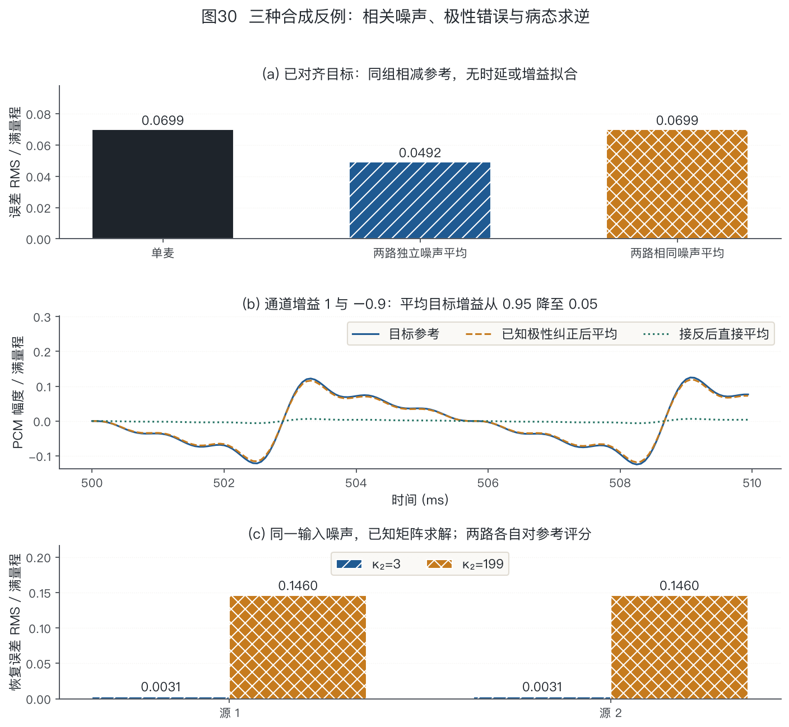
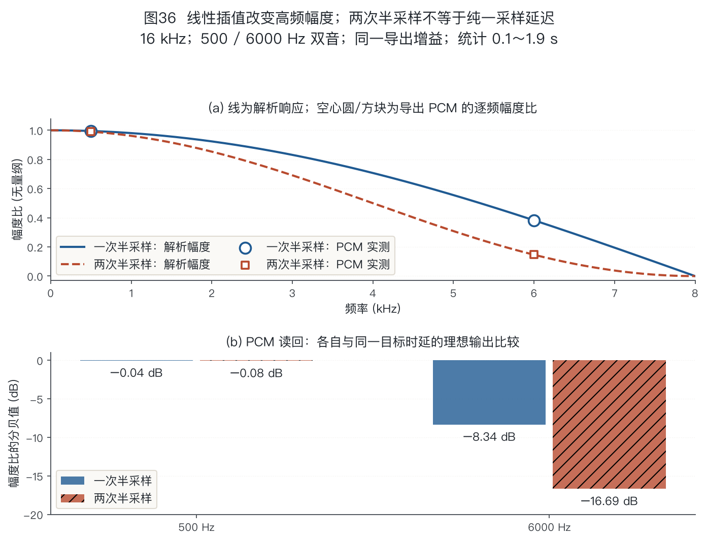
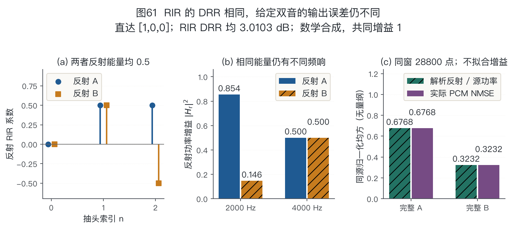

本页目录
⚠️ 本篇是第 17 章，即附录 B（正文共 16 章，即第 0～15 章，其中第 12～15 章为四篇扩展专题，另有附录 A、B），可独立查阅，前后篇见下方导航。
首页导读：🏠 导读与导航 ｜ 上一篇：第 16 章 · 附录 A：符号术语数学 ｜ 下一篇：（无）
第 17 章 · 附录 B：学习路径、领域地图、排错、练习与复现
17.1 研究生学习路径
如果你准备系统开展麦克风阵列方向的研究或工程研发，建议先结合第 0 章全书数学基础吃透经典物理与统计阵列模型，再逐步过渡到开源基线、公开数据集与真实多通道硬件实验。
- 基础阅读：Van Veen & Buckley, Beamforming: A Versatile Approach to Spatial Filtering（IEEE ASSP Magazine，1988）；Krim & Viberg, Two Decades of Array Signal Processing Research: The Parametric Approach（IEEE Signal Processing Magazine，1996）。
- 语音场景综述：Kumatani、McDonough 与 Raj, Microphone Array Processing for Distant Speech Recognition: From Close-Talking Microphones to Far-Field Sensors（IEEE Signal Processing Magazine 29(6):127–140，2012）；Gannot et al., A Consolidated Perspective on Multimicrophone Speech Enhancement and Source Separation（IEEE/ACM TASLP，2017）。需要注意，Kumatani 等还有一篇主标题相同、副标题为 Towards Real-World Deployment 的文章，检索时请连同副标题核对。
- 奠基论文：Capon（1969）、Griffiths & Jim 的 GSC（1982，An Alternative Approach to Linearly Constrained Adaptive Beamforming）、Schmidt 的 MUSIC（1986）、Roy & Kailath 的 ESPRIT（1989）、Allen & Berkley 的镜像声源法（1979）、Nakatani 等的 WPE（2010）、Pal & Vaidyanathan 的嵌套阵（2010）。阅读原始文献时，建议回到本书对应章节核对傅里叶符号、导向矢量共轭和归一化约定。
- 回声消除：Hänsler & Schmidt, Acoustic Echo and Noise Control（Wiley，2004）；近年工业界与学界进展可结合 ICASSP AEC Challenge 系列评测报告阅读。
- 深度学习方向：Chakrabarty 与 Habets, Multi-Speaker DOA Estimation Using Deep Convolutional Networks Trained With Noise Signals（IEEE JSTSP 13(1):8–21，2019）；Gu et al., Towards Unified All-Neural Beamforming for Time and Frequency Domain Speech Separation（IEEE/ACM TASLP, vol. 31, pp. 849–862, 2023, DOI
10.1109/TASLP.2022.3229261，提出时频域统一全神经波束框架的代表性原创研究论文）。 -
递进实验路线：建议每次只引入一类新变量，并把前一步的确定性输出留作下一步的基准对照。
- 运行
codes/中仅依赖 NumPy 的教学实现（含第 0 章 §0.9的E00-01～E00-16数学基础核验），逐项核对手算算例、张量维度与退化边界。 - 在隔离环境中用 pyroomacoustics 验证 DSB、MVDR、MUSIC 和 SRP-PHAT 基线，完整记录房间尺寸、阵列坐标与随机种子。
- 先按 §17.7 生成插图所需的合成音频与追踪清单，再运行
scripts/中的 12 个绘图脚本，在固定参数下复现全部 87 张编号图，并对照正文逐图核验成立条件。 - 围绕具体任务选定公开数据集与固定版本参考系统，分别核实源码、模型权重和数据集的使用许可与评分口径。
- 在多通道采集硬件上实测处理延迟、时钟同步与幅相标定；仿真指标不能代替真实设备测量。
- 运行
读完第 2、3、5 章后，若关注声源强度反演与区域声场诊断，可选读扩展专题Ⅰ：声学成像与噪声源诊断；读完第 2、5、10 章后，若关注带宽受限与异步时钟下的多设备协同处理，可选读扩展专题Ⅱ：分布式麦克风协同增强。
读完第 1、2、5 章后，若关注全景声球谐采集、双耳信号匹配与可穿戴跨模态降噪，可选读扩展专题Ⅲ：空间声场采集、参数化编码与可穿戴阵列；读完第 5、8、9、10 章后，若关注声纹、近场或视听线索驱动的目标提取与多人重叠日志，可选读扩展专题Ⅳ：条件目标提取、多通道日志与远场多模态前端。这四篇专题按工程任务按需选学即可，并非基础入门的必经环节。
17.2 领域地图：教材、会议、期刊与挑战赛
本节整理了本领域的经典教材与专著、公开数据集与基准、核心开源软件库、核心会议、主流期刊、公开挑战赛及技术演进脉络，供按需检索。
教材、专著与权威综述（教材与专著按阅读难度由浅入深排列，末行附两篇核心综述）：
| 书名 / 文献与作者 | 内容特点与阅读建议 |
|---|---|
| Benesty, Chen & Huang, Microphone Array Signal Processing（Springer，2008） | 篇幅精炼，系统覆盖阵列信号模型、声源定位、波束形成与多通道语音增强 |
| Loizou, Speech Enhancement: Theory and Practice（2nd ed., CRC Press，2013） | 语音增强领域经典教科书，系统覆盖谱减、统计估计、语音可懂度与客观评价体系 |
| Vary & Martin, Digital Speech Transmission: Enhancement, Coding and Error Concealment（Wiley，2006） | 经典数字语音传输与声学前端专著，详述噪声功率谱估计、语音增强与编解码协同 |
| Brandstein & Ward (eds.), Microphone Arrays: Signal Processing Techniques and Applications（Springer，2001） | 经典专题论文集，各章由对应子方向的奠基学者执笔 |
| Tashev, Sound Capture and Processing: Practical Approaches（Wiley，2009） | 从工程落地视角讨论声学拾音链路、器件非理想性与实时实现权衡 |
| Naylor & Gaubitch (eds.), Speech Dereverberation（Springer，2010） | 去混响领域奠基专著，系统覆盖房间声学逆滤波、MINT、谱增强与线性预测去混响，可配合第 7 章延伸阅读 |
| Doclo, Gannot, Moonen & Spriet, Acoustic Beamforming for Hearing Aid Applications（载于 Handbook on Array Processing and Sensor Networks, Wiley-IEEE Press，2010，第 9 章，pp. 269–302） | 助听器与双耳多通道维纳滤波（MWF/SDW-MWF）及空间线索保持的经典专章，可配合§5.5.1与专题Ⅲ §14.7阅读 |
| Johnson & Dudgeon, Array Signal Processing: Concepts and Techniques（Prentice Hall，1993） | 通用阵列信号处理经典教材，呈现雷达、声呐与声学阵列的同源理论 |
| Van Trees, Optimum Array Processing: Part IV of Detection, Estimation, and Modulation Theory（Wiley，2002） | 严密推导统计最优阵列处理与性能界，适合深入查阅数学细节 |
| Vincent, Virtanen & Gannot (eds.), Audio Source Separation and Speech Enhancement（Wiley，2018） | 现代音源分离与多通道语音增强方法的系统合集 |
| Rafaely, Fundamentals of Spherical Array Processing（Springer，第一版 2015，DOI 10.1007/978-3-662-45664-4；第二版在线 2018、版权 2019，DOI 10.1007/978-3-319-99561-8） | 系统讲授球面阵列与球谐域波束形成，可配合 §5.8 与扩展专题Ⅲ §14.2 延伸阅读 |
| Zotter & Frank, Ambisonics: A Practical 3D Audio Theory for Recording, Studio Production, Sound Reinforcement, and Virtual Reality（Springer，2019，开放获取，DOI 10.1007/978-3-030-17207-7） | 全面覆盖 ACN/SN3D 球谐编码、$\max\text{-}r_E$ 能量矢量扬声器解码、三维旋转与双耳渲染，可配合扩展专题Ⅲ延伸阅读 |
| 核心综述：Park et al., A Review of Speaker Diarization: Recent Advances with Deep Learning（Computer Speech & Language 72:101317，2022，DOI 10.1016/j.csl.2021.101317）；Žmolíková et al., Neural Target Speech Extraction: An Overview（IEEE Signal Processing Magazine 40(3):8–29，2023，DOI 10.1109/MSP.2023.3240008） | 说话人日志（聚类、EEND、TS-VAD 与 DER 评测）及神经目标说话人提取（声纹、空间与视听线索条件化）的两篇权威期刊综述，可配合第 8 章 §8.6 与扩展专题Ⅳ阅读 |
代表性公开数据集与基准（实验选用前须独立核对各数据子集的最新授权协议与官方评分脚本）：
| 数据集 / 基准 | 通道与阵列几何 | 数据来源（实录 / 仿真） | 核心任务 | 许可与评测要点 |
|---|---|---|---|---|
| WHAM! / WHAMR! | 单 / 双通道 | WSJ0 干声 + 真实环境噪声（WHAMR! 叠加仿真混响） | 带噪与混响双人语音分离 | 噪声与混合脚本多为 CC BY-NC 4.0，底料 WSJ0 须另具 LDC 授权 |
| LibriMix | 单 / 多通道扩展 | LibriSpeech + WHAM! 噪声合成 | 通用多说话人分离与增强 | 开源友好（CC BY 4.0 / CC BY-NC 4.0），适合快速基线复现 |
| DNS Challenge（ICASSP） | 单通道为主（部分含多通道） | 多语种真实噪声 + 仿真与实录混响 | 实时语音增强与个性化降噪 | 遵循各届官方开源/CC 许可，汇报须区分非盲开发集与盲测集 |
| AEC Challenge（ICASSP） | 单通道及近/远端参考对 | 大规模众包真实设备录音 + 合成回声 | 全双工声学回声消除与双讲保真 | CC 许可，常配套主观 MOS 与无参考 AECMOS 口径 |
| AMI Meeting Corpus | 8 麦桌面圆阵 + 近讲头戴麦 + 视听 | 真实会议室多人自然交谈 | 远场多通道 ASR、分离与说话人日志 | CC BY 4.0，真实重叠会议核心基准，常报 sa-WER / cpWER / DER |
| AliMeeting / AISHELL-4 | 8 麦圆阵（中文会议室） | 真实多人中文会议录音 | 中文远场多通道 ASR、重叠分离与日志 | CC BY-SA 4.0（配套基线代码多为 Apache-2.0，OpenSLR SLR111 / SLR119），覆盖高重叠比例 |
| CHiME-3～9 | 4～6 麦平板、多台 4 麦 Kinect、异构多设备及 360°/助听阵 | 真实噪杂、家庭晚宴、会议实录（部分含仿真） | 远场多通道 ASR、DASR、多会话转写与低延迟助听 | 各届独立数据协议；CHiME-7/8/9 会议识别采用 cpWER / tcpWER |
| NOTSOFAR-1 | 多台 7 麦桌面圆阵 + 近讲参考 | 真实会议室多设备录音（CHiME-8 Task 2） | 远场多设备 ASR、分离与日志 | CC BY 4.0；广泛用于 DiCoW 与 CHiME-8 DASR |
| LibriCSS | 7 麦桌面圆阵 | 真实会议室重放 LibriSpeech 录音 | 连续语音分离（CSS，0～40% 重叠） | 评测脚本 MIT；音频基于 CC BY 4.0 的 LibriSpeech 重放（须另核官方下载包条款）；§8.6 与 VarArray 连续分离核心基准 |
| SMS-WSJ | 6 麦圆阵（8 kHz） | WSJ0/WSJ1 + 仿真混响与白噪 | 多通道混响说话人分离与增强 | 仿真脚本 MIT；底料 WSJ0/WSJ1 需 LDC 授权（§17.3 ArrayDPS 评测集） |
| REVERB Challenge | 1 / 2 / 8 麦圆阵 | 实测会议室 RIR 仿真 + 真实房间录音 | 单 / 多通道去混响与远场 ASR | 需注意底料 WSJCAM0 的数据授权边界 |
| SPEAR / EasyCom | 6 麦 AR 眼镜阵 + 头部姿态与视频 | 真实嘈杂餐厅对话实录 | 可穿戴头戴阵列语音增强与多模态目标提取 | CC BY-NC 4.0，EasyCom 原始多模态语料由 Meta 开源 |
| Clarity Challenge（CEC / CPC） | 双耳多麦助听器阵列 | 仿真家居多噪声场景 + 听障模型 | 助听器多麦增强与语音可懂度预测 | 官方研究许可；衔接专题Ⅲ可穿戴双耳场景 |
| LOCATA | 4/12/15/32 麦助听、桌面、球面与机器人阵 | 真实混响室内静止与移动说话人录音 | 多构型 DOA 估计与动态声源追踪 | ODC-By v1.0，配套高精度光学动作捕捉真值 |
| Spatial-LibriSpeech | 19 麦球阵与 FOA（650+ 小时） | 多房间真实建筑几何声学渲染 | 空间 DOA、$T_{60}$/DRR 估计与空间增强 | Apple 官方数据集自定义 LICENSE（底料 LibriSpeech 为 CC BY 4.0）；附几何与声学真值 |
| SonicSet | 动态双耳与多麦阵列渲染 | Matterport3D / Habitat-sim 移动声源仿真 | 移动声源 3D 空间音频理解与分离 | 配套 SonicSim 研究许可，面向真实建筑布局动态场景 |
| Ego4D / Project Aria | 多麦头戴眼镜阵 + 同步第一视角视频与 IMU | 真实日常第一视角多模态采集 | 第一视角声源定位、目标提取与交互理解 | 须签署官方研究数据许可协议，含真实头部转动与自语音场景 |
| STARSS23（DCASE SELD） | 4 麦四面体 FOA + 4 麦 MIC + 360° 视频 | 真实室内多声事件移动录音 | 声事件定位检测（SELD）与距离估计 | MIT License（Zenodo 10.5281/zenodo.7880637）；DCASE 2024 Task 3 沿用此名 |
| URGENT Challenge | 单通道为主（跨多采样率与多退化） | 多语料混合实录与合成退化（混响/削波/带宽受限） | 通用语音增强（NeurIPS 2024 / Interspeech 2025 / ICASSP 2026） | 遵循各基础语料协议；CHiME-10 纳入通用增强联合赛道 |
核心开源软件与工具库（部署前须独立核对最新源码许可与预训练模型权重协议）：
| 开源库 | 许可证 | 核心能力与适用章节 | 版本与维护边界 |
|---|---|---|---|
pyroomacoustics |
MIT | 镜像法/射线追踪房间仿真与基础 DOA/波束（§2.4、§4、题 16） | PyPI v0.10.1；本仓房间资产锁定 v0.10.0 |
Acoular |
BSD-3-Clause | 声学成像 CSM、DAS、CLEAN-SC、DAMAS 与标定（专题Ⅰ） | PyPI v26.08（按年份编号发布） |
doatools |
MIT | 阵列流形、差分共阵（DA/SS）、MUSIC/ESPRIT 与稀疏 DOA（§3.3、§4） | Python 活跃库；调用前核对输入校验 |
nara_wpe |
MIT | NumPy/PyTorch 多通道 WPE 盲去混响参考实现（§7） | 帕德博恩大学开源参考实现 |
pyfar |
MIT | 指数扫频、正则化反卷积、声学滤波与 SOFA 生态（§2.4） | PyPI v0.8.1 |
pb_bss |
MIT | cACGMM、MVDR、GEV、BAN 等统计空间混合工具（§5.9、§8.4） | 帕德博恩大学开源参考库 |
ESPnet |
Apache-2.0 | 端到端语音识别与 espnet_enh 多通道分离/CSS/GSS（§8、§17.3） |
含 TF-GridNet 与 CHiME 基线；权重许可另核 |
SpeechBrain |
Apache-2.0 | PyTorch 语音增强、分离、声纹与识别综合工具包（§8、§15） | 活跃社区；预训练模型协议单独核对 |
pyannote.audio |
MIT（源码） | 神经说话人日志、VAD 与声纹流水线（专题Ⅳ、§17.3） | v4.1.0；HF 权重多为 CC BY 4.0 或门控商业条款 |
libmysofa |
BSD-3-Clause | AES69 SOFA HRTF 轻量化 C 读取与方向插值库（§1.2.3、专题Ⅲ） | v1.3.5；本仓已核验插值契约 |
| WebRTC AEC3 | BSD-3-Clause + 专利许可 | 工业级实时 AEC3、NS 与 AGC C++ 管线（§6.7） | webrtc-audio-processing v1.x/v2.x 持续维护；勿与停更的旧 py-webrtcvad 混淆（轻量 VAD 可选 Silero VAD MIT） |
核心会议：ICASSP（信号处理旗舰年会）、Interspeech（语音科学旗舰年会）、WASPAA（音频与声学信号处理研讨会，每两年一届）、IWAENC（声学信号增强国际研讨会）、HSCMA（免提语音通信与麦克风阵列研讨会）、DCASE Workshop（声事件检测与声学场景分析）。
主流期刊：IEEE Transactions on Audio, Speech and Language Processing（现缩写 TASLPRO，本领域核心期刊）、IEEE JSTSP（信号处理专题特刊）、JASA（美国声学学会会刊）、Speech Communication。
公开挑战赛是了解真实场景难点与标准评测口径的重要窗口。
CHiME 系列长期聚焦远场、多说话人与多通道语音处理。CHiME-9 设置了 MCoRec（Multi-Modal Context-aware Recognition，多模态上下文感知多会话转写与会话聚类）和 ECHI（低延迟助听对话增强）两项任务；CHiME-10 官方任务页公布了 ECHI-2、URGENT 与 SG-TSE（Smart-Glasses Target Speech Extraction，智能眼镜目标语音提取）三项任务，官方日程页计划于 2027 年 2 月 4 日开放数据与基线，提交窗口暂定为 2027 年 8～9 月（上述信息核实于 2026 年 11 月 11 日，参赛前请以官网最新通知为准）。
DCASE 2026 的系统提交已于 2026 年 6 月 15 日截止，并于同年 7 月 1 日公布结果；其中 Task 3 转向语义声学成像（Semantic Acoustic Imaging SELD），与 DCASE 2024 Task 3 的声源距离估计任务设定不同（核实于 2026 年 10 月 5 日，详见 DCASE 2026 官方主页、提交说明与结果公告）。
需要留意的是，DCASE 2026 Task 3 要求同时输出声事件类别与空间能量分布，并按官方图像匹配及相关性指标打分。本书第 12 章的 DAS、DAMAS 或 CMF 虽能给出给定传播模型下的空间功率图，但本身不包含声事件分类器或赛事输出封装；若将其用作前端基线对照，应分别汇报物理成像误差与下游语义评测得分，不能拿功率图颜色或第 12 章的内部残差指标替代赛事总分。
其他代表性评测还包括 REVERB 去混响评测、ICASSP DNS/AEC Challenge，以及已结项的 SPEAR Challenge 2023。SPEAR 采用 6 通道头戴设备研究增强现实（AR）场景的语音增强（头戴式双耳信号匹配 BSM/MagLS 与双耳相干度保持原理见扩展专题Ⅲ §14.5～§14.7），引用时应注明其特定年份、佩戴几何与评测条件，不宜外推为持续更新的通用榜单。
技术演进脉络（麦克风阵列处理很大程度上是从雷达、声呐与地震阵列向宽带房间语音迁移并不断融合统计学习的历史）：
| 年代 | 代表性里程碑 |
|---|---|
| 1940～1960 年代 | 雷达与声呐阵列处理奠基（Bartlett 常规波束扫描） |
| 1969 | Capon 提出最小方差无失真谱估计（最初面向地震台阵） |
| 1972 | Frost 提出时域线性约束自适应波束形成 |
| 1979～1982 | Allen & Berkley 提出矩形房间镜像声源法；Griffiths & Jim 提出广义旁瓣相消器（GSC） |
| 1985 | Flanagan 等研制出可数字转向的大孔径会议室麦克风阵列 |
| 1986～1989 | MUSIC（1986）与 ESPRIT（1989）利用子空间正交性估计波达方向；实际分辨力仍受孔径、信噪比、快拍数与流形失配制约 |
| 1990 年代 | Elko 系统化差分麦克风阵列设计，逐步进入助听器与桌面会议终端 |
| 2001～2008 | Brandstein & Ward、Benesty 等专著相继出版，语音阵列信号处理知识体系成型 |
| 2010 | Nakatani 等提出 WPE 盲去混响；Pal & Vaidyanathan 提出嵌套阵（Nested Array） |
| 2011 | 首届 CHiME 挑战赛举办，远场语音识别与增强形成公开基准 |
| 2014 | Amazon Echo 等智能音箱普及消费级多麦远场交互（具体阵元数与构型随硬件代次演进） |
| 2015～2018 | CHiME-3/4/5 推动时频掩码辅助统计波束形成与导引源分离（GSS）成为强基线 |
| 2019～2024 | 深度学习声源定位与追踪（如 Shimada et al. ICASSP 2021 的 ACCDOA 活动与方向联合表示）、全神经多通道前端兴起；CHiME-7/8 引入预训练大模型后端；DCASE 2024 Task 3 基于 STARSS23 数据集评测声源距离估计 |
| 2025～2026 | CHiME-9 聚焦多会话 MCoRec 与低延迟助听 ECHI，2026 年 7 月发布 CHiME-10 三项新任务；DCASE 2026 Task 3 转向语义声学成像并公布评测结果 |
查阅文献时注意，DCASE 2024 Task 3 官方说明使用的开发集与评测集名称固定为 STARSS23，数据集后缀年份不随挑战赛举办年份更改。
17.3 研究前沿速览（2024—）
本节将前文建立的经典阵列模型与 2024 年以来的代表性研究方向衔接起来。为便于核查，文中引用均指向原论文与固定版本的公开源码入口；本教程对这些外部神经系统仅梳理方法边界与静态接口契约，未在本机下载模型权重或运行深度网络推理。各项实验成绩均以对应论文的数据集、实现细节与评分脚本为前提，赛事日程以官方最新公告为准。
研究方向一：预训练模型用作远场识别后端
在 CHiME-7/8（2023/2024）远场多说话人识别评测中，不少参赛团队采用 Whisper、WavLM 等大规模预训练模型作为识别后端，同时仍有许多高排名系统在前端保留 GSS（导引源分离，详见 §8.4）与解析统计波束形成。这些参赛方案说明预训练后端与经典阵列前端在该评测条件下能够有效互补，并不意味着远场语音处理已简化为单一端到端模型（参见 CHiME-7/8 综述预印本，arXiv:2507.18161）。
研究方向二：阵列无关系统
Cornell 等在 CHiME-8 DASR 任务报告中定义了跨异构设备的远场多说话人识别任务，并提供了 ESPnet 与 NeMo 两条官方基线。该报告并非针对某一特定通道聚合网络的算法论文，两条基线在说话人日志（说话人分割）、多通道前端增强与识别后端上的具体配置需要对照原文 §5 与 §6 分别查阅，其跨设备泛化表现也以该任务的训练语料、测试硬件与评分脚本为界。
研究方向三：目标说话人提取
目标说话人提取（Target Speaker Extraction，TSE）利用预先录制的注册语音、视觉口型或空间方向提示来刻画目标说话人，再从多源混合语音中分离出对应的单人语音轨。头戴式 AR 眼镜阵列与低成本有线耳机附加被动声学微结构则进一步拓展了空间条件线索的获取方式；有关特征级线性调制（FiLM）、目标沉默段双态能量地板损失与近场球面波声学距离气泡的完整推导详见扩展专题Ⅳ §15.1～§15.3。
查阅文献时需注意版本演进：发表于 ICASSP 2022 的 TEA-PSE 原工作与后续评测迭代的 TEA-PSE 3.0 在网络结构与训练配置上存在差异，不宜混为一谈。发表于 ICASSP 2024 的 CIENet（方法细节可对照作者预印本）则将注册语音与混合语音的时频表示送入跨注意力交互模块，逐帧计算随时间变化的目标关联权重，而非把整段注册语音压缩为单一静态嵌入向量后简单拼接到混合频谱上。
SonicSieve（CHI 2026，见项目主页与作者论文 v3，2026-09-22 核实）展示了另一条物理辅助思路：该方案明确摒弃依赖特定机型的手机壳体设计，改为在低成本有线耳机线控麦克风上附加 3D 打印被动声学微结构，并与智能手机内置麦克风组成双麦系统，利用微结构对不同入射方向产生的方向相关传递响应变化，使神经网络得以依靠谱特征提取目标语音，而非由注册声纹指定身份。这种能力建立在配套物理微结构与对应训练数据之上，无法仅靠普通耳机和手机加载纯软件获得。此外，§6.5 介绍的个性化 AEC 虽同样引入目标说话人条件，但因多出扬声器回声参考支路与双讲保护目标，训练损失与网络接口仍需单独设计。
研究方向四：生成式语音增强与推理加速
以 SGMSE+（Richter et al., IEEE/ACM TASLP 2023，源码与论文）和 StoRM（Lemercier et al., IEEE/ACM TASLP 2023，源码与论文）为代表的生成式增强方法，在复数 STFT 域构建基于随机微分方程（SDE）的扩散先验；其中 StoRM 先用判别式网络给出粗估计，再交由扩散过程细化，从而减轻采样步数负担。近年来的流匹配（Flow Matching）、分布蒸馏与一致性模型也在持续压缩反向采样开销。
与判别式滤波相比，生成式模型在强噪声下往往能改善主观听感，但存在“幻觉”风险——在极低信噪比区间补全出参考语音中并不存在的音素细节，因此评测时必须同时考核感知质量、语音内容一致性与下游识别词错率（WER）。例如，FlowSep（ICASSP 2025，见原论文与锁定源码）将整流流（Rectified Flow）用于变分自编码器（VAE）隐空间的文本查询通用音效分离，其单通道隐空间生成机制与许可条件（仓库根目录未附显式再分发许可证，且依赖外部预训练检查点）均不能直接外推至保相多通道语音前端。
若把生成模型扩展到多通道并与 §5.9 的“时频掩码 + 解析波束”对比，除了对齐前瞻帧数、采样步数和算力预算，还要核查跨通道相位与空间协方差是否自洽。做代码级最小核对时也需留心入口细节：在锁定版本的 SGMSE 源码中，ScoreModel.enhance() 在 OUVE 分支下实际按 self.sde.sampler_type 分派采样器，而且入口直接按输入波形峰值做除法归一化、未设全零静音保护，测试时不能传入全零数组（静态接口核对详见生成式实现研究）。
研究方向五：TF-GridNet 与复数谱映射骨干
第 8 章的解析盲源分离依靠源信号统计独立性与线性卷积混合模型；TF-GridNet（见期刊版预印本）则直接在复数短时频谱域做端到端映射，把混合频谱的实部和虚部拼作输入特征，直接回归各目标源频谱的实部与虚部，最后经逆 STFT 还原时域波形。每个基本处理块依次沿帧内频率轴、子带内时间轴以及全频带跨帧自注意力路径交换上下文，“时频网格（Grid）”之名便源于这种时间维与频率维的交替建模。
阅读与对比时应区分两个公开版本：Wang 等在 ICASSP 2023 会议版中聚焦无混响单通道说话人分离，而在 IEEE/ACM TASLP 2023 期刊版中进一步扩展到带噪、混响与多通道联合增强分离。做基线对比前应先锁定具体版本，写清输入通道数、目标源数、STFT 窗移参数与数据集划分；在锁定版 ESPnet 的 TFGridNet 实现中，还需核对混合信号与参考目标的方差归一化开关，避免把不同混合口径下的 SI-SDRi 混排比较。
沿同一复数谱双路径范式继续演进，TF-Locoformer（Saijo 等，MERL，IWAENC 2024，arXiv:2408.03440）用多头自注意力与卷积前馈模块（SwiGLU / Conv-FFN）替代 TF-GridNet 中的双向 LSTM（BLSTM），构造出不含循环层的时频分离骨干，在多通道语音分离与增强任务上兼顾高并行度与局部—全局上下文建模（静态结构与复谱接口核查详见分离研究手册 N15）。
研究方向六：几何无关前端的期刊研究
Kamo 等在 Computer Speech & Language 95:101820（2026，见期刊正式页与作者 v2 全文）中系统梳理了一套面向真实会议录音的几何无关多说话人远场识别流水线。对照作者 v2 原文第 2 节与第 4.1～4.3.6 节可以看到，系统并非由单个端到端分离掩码包办一切：前端先做局部说话人日志，利用初步 GSS 输出提取说话人声纹嵌入，再经跨块全局聚类确定说话人数，最后由目标说话人语音活动检测（TS-VAD，多通道空谱扩展与排他掩码闭环见§15.5）精细修正每人的发声起止区间——说话人活动、总人数与身份归属在级联步骤中各司其职。
在多通道增强环节，系统先按空间协方差最大特征值（EV）和早晚混响能量比（$C_{50}$）筛选可用通道，随后串联 WPE 去混响、GSS 分离与空间预测多通道维纳滤波（SP-MWF），再依据估计输出信噪比挑出参考通道、施加盲解析归一化（BAN）后送入语音识别后端（其中涉及的波束、WPE 与 GSS 原理及手算可分别对照第 5、7、8 章）。这里所说的“几何无关”，是指算法不依赖预先写入的阵列三维坐标，但仍假定参与融合的通道已完成同步对齐，并不能直接免疫跨设备时钟漂移或剧烈的声学域失配。
研究方向七：CHiME-9 与大模型后端
CHiME-9 官方任务页设置了两项输入模态与优化目标截然不同的赛道：MCoRec 利用房间中央的 360° 全景音视频，要求转写多人对话并聚类出会话群组；ECHI 则面向助听场景，要求佩戴者端以流式因果方式增强对话对象语音，官方规则规定算法总延迟不超过 20 ms。因此，两项赛道的得分不能合并为同一张“CHiME-9 语音增强”榜单。
围绕多人重叠语音中“只转写指定说话人”的任务，DiCoW（Polok et al., Computer Speech & Language 95:101841，2026，DOI 10.1016/j.csl.2025.101841）直接把说话人日志给出的时序活动标签作为条件注入 Whisper 模型，端到端输出目标说话人的文本，跳过了“先还原分离波形、再送入常规识别器”的中间环节（与级联链路及 SOT 的选型对比见§15.7）。
查阅其公开仓库时需区分代码入口与演进分支：在演示仓固定提交中，example.py 调用 DiCoW v1 配合 Pyannote 3.1，而 app.py 调用 DiCoW v2 配合 Pyannote 3.1，不能仅凭同一仓库提交号视为同一模型版本；配套的训练与推理源码仓则独立维护（演示仓后续主分支新增的 DiariZen 依赖并非上述固定提交的运行前提）。此外，代码与模型权重的许可边界必须分开核查：源码采用 Apache-2.0，DiCoW v1 权重与 DiCoW v2 权重采用 CC BY 4.0，后续演示引入的 DiariZen 权重限定为非商用的 CC BY-NC 4.0，而 Pyannote 3.1 则设有门控申请要求。实验对比时应固定说话人活动标签来源、音频切片与文本规范化规则，并留意其面向转写的离线架构不能直接充当 ECHI 赛道的 20 ms 助听增强基线。
研究方向八：扩散先验用于无监督盲分离
ArrayDPS（Xu et al., ICML 2025，PMLR 267 正式论文）探索了“既无阵列几何与房间冲激响应先验，也无成对干净分离标签”条件下的多通道盲源分离。不同于第 8 章 AuxIVA 仅凭源间统计独立性迭代解混矩阵，ArrayDPS 借助预训练的单说话人扩散先验做后验采样，并在每步反向去噪中联合估计相对房间冲激响应（Relative RIR）以计算混合重构似然梯度。这一框架仍要求预先给定说话人数、各通道采样同步、声学混合满足线性卷积近似，且单说话人先验能够覆盖测试语料声学域。
阅读原文 §2 需特别注意目标定义：该模型恢复的是参考麦克风处各说话人的混响源图像（reverberant source image），而非直接消去混响的干声，因此计算评价指标时参考信号必须按同一参考阵元对齐。若开展最小复现，可对齐固定作者实现中的 SMS-WSJ 双说话人、3 通道、8 kHz 配方，固定 num_speakers=2、n_channels=3、num_steps=400，在相同评分口径下与 IVA 初始化输出对照，同时记录总耗时、随机种子与峰值显存（官方说明显存需求超过 7 GB，400 步采样内嵌相对 RIR 优化，定位于离线研究而非低延迟流式部署）。
还需核对代码与论文的参数差异：论文正文中前向卷积投影（FCP）写为 512 点 FFT、64 点帧移，而公开源码与 README 默认配置采用 512 点窗长、128 点帧移。
审查其评估脚本还可见两处容易混淆的细节：其一，核心采样器 Sampler 的似然引导并不读取干净真值，但外层入口 separate.py 在第 161 行读取了真值 sources[:,0,:] 计算 SDR，并在第 180～186 行依据真值指标决定提前终止或重跑——这一机制仅适用于离线诊断，实际无参考部署时不能原样沿用。
其二，原文 §4.2 区分了五次独立采样得分的均值/标准差（Mean，并非把五条输出波形求平均）、借真值挑最高分的上界诊断（Max），以及仅凭混合信号重构似然挑选样本的无监督准则（ML），引用表格数据时需严格区分（参数层级与接口契约核查见 ArrayDPS 实现研究）。
研究方向九：全双工语音大模型（Audio-LLM / Speech-to-Speech）与空间听觉大模型（Spatial-LLM）时代的前端定位
语音大模型已有不同的输入输出形式。Moshi 同时建模用户与系统语音流，用于全双工语音对话；Qwen2-Audio 接收音频与文本，生成文本回答。BAT、Spatial-AST 等模型则进一步研究双耳与空间声场理解。连续音频特征或离散声学词元（audio tokens）接入多模态骨干后，前端既要为语义理解提供清晰输入，也要保留任务所需的空间线索。麦克风阵列的职责可据此分为物理采集与声学处理，以及面向词元化后端的输入优化两类：
- 物理上仍不可约简的前端职责：首先，因果低延迟语音打断线性回声消除（§6.1～§6.7）无法由生成式大模型凭空替代——若模型不接入设备端精确的数字播放参考信号与对齐的声学回声路径，强外放回声就无法在不损毁近端打断音节的前提下被凭空剔除；其次，全双工连续对话中的近场距离气泡话轮门控与同向远场干扰抑制（§15.3～§15.4）仍需依靠球面波前曲率差异、空间滤波与多通道语音活动判别来区分近处主讲人与背景人声或电视播音；再次，硬件采样时钟同步、增益标定与幅相一致性（§10.2）是所有上游信息的物理前提，未补偿的采样率偏移（SRO）和通道错位会破坏跨通道相干性，应先估计时差并重采样对齐；模数削波则会丢失原始波形信息，不能靠后端对齐恢复。
- 前端优化目标与接口形态的转向：面向全双工语音大模型的神经离散编解码词元化器（如 Mimi、EnCodec、DAC 等残差向量量化编解码器）对激进的单通道非线性语音增强伪影高度敏感——过深谱减、生硬时频掩码或神经音乐噪声会在声学词元空间引入分布外扰动，反过来拉低下游语义理解与语音生成质量（与第 10 章 §10.3.1 的观测回加与线性波束优先原则一脉相承）。因此，面向 Audio-LLM 与 Spatial-LLM 的多通道前端正从“借助重度非线性后滤波片面追高侵入式 PESQ 标量分”，转向保持线性声学保真度（优先由稳健线性 AEC、WPE 去混响与无失真线性波束形成提供低失真音频流，或保守混合原始观测），同时向大模型输出结构化空间与日志辅助通道（如实时 DOA 轨迹、活跃说话人起止时间戳与声纹身份线索），让物理前端与语义大模型在各自最擅长的层面上协同工作。
专题：神经网络前端的泛化失配与四类对策
在实验室固定阵列和仿真房间里调优的神经网络前端，一旦迁移到陌生的阵列构型、真实混响环境或新下游任务，性能往往显著滑坡——这一现象统称为泛化失配。下面将失配根源拆解为三个维度，并结合前文提到的“阵列无关系统”与“几何无关前端”梳理四类工程对策。
三类典型失配来源：
- 阵列物理失配：部署设备的阵元排布、通道数量、麦克风幅相一致性或采样时钟与训练集不一致。如果网络输入层隐式绑定了固定的通道排列顺序与特定基线的相位差分布，更换硬件外壳或阵元间距后，学到的空间特征便会失效；直接回归权重的全神经波束形成对此尤为敏感（参见 §5.9 第 2 条）。
- 声学环境失配：测试房间的混响衰减时间、背景噪声非平稳结构或说话人拾音距离超出了训练分布。此时时频掩码估计的漏检与误判会直接污染目标与干扰空间协方差矩阵，进而拉低后端 MVDR 权重的空间抑制比。
- 任务与数据域失配：仿真训练集忽略了阵元坐标公差、设备障板衍射与频响起伏；测试语种或口音发生迁移；或者把针对人耳主观听感优化的增强网络直接串在自动语音识别（ASR）前端——若是生成式增强前端，还需防范低信噪比下的音素篡改（见上文研究方向四）。
四类缓解对策：
- 多样化数据增广与微调：在训练阶段混合多种阵列拓扑、房间尺寸、混响时间与真实噪声，再配合少量目标硬件实录样本做域自适应。数据增广的核心在于拓宽网络见过的跨通道幅相流形分布，而非试图穷举世上所有设备。
- 解耦中间表示与解析滤波：让神经网络专注于估计对绝对坐标不敏感的中间统计量（如时频掩码、空间协方差或说话人活动概率），再把空间滤波交还给目标函数透明的解析算法。例如，MVDR 严格对指定导向矢量或相对传递函数（RTF）施加无失真单位响应约束；GSS 先借助说话人活动先验稳定空间混合模型聚类，再按选定波束准则提取语音（注意 GSS 整体流水线本身不等同于单一无失真线性约束，详见 §5.9 第 1 条与 §8.4）。这种“神经估计 + 解析求解”的分工仍需在跨阵列测试集上验证中间表示本身的泛化度。
- 面向对称性的结构与训练正则：训练中随机丢弃部分通道、随机打乱通道次序并对阵元坐标施加微扰，分别模拟单麦损坏、可变通道数接入与装配公差；同时在网络架构层面严格保证通道维度的置换不变性或置换等变性。
- 部署期标定与置信度回退：上机前完成通道增益相位校准，运行期结合信噪比、掩码熵或协方差条件数动态评估风险——当神经前端置信度不足或算力受限时，平滑回退至稳健的解析波束基线。分级切换架构能否带来端到端净收益，仍须在目标硬件上实测确认。
阵列无关前端的通用积木：TAC 与 VarArray。跨设备系统的典型范式是：先对每条通道用共享权重独立提取局部时频特征，再通过跨通道池化或自注意力聚合成与通道排列无关的全局上下文。其中最具代表性的基础模块是变换—平均—拼接（Transform-Average-Concatenate，TAC，Yi Luo 等，ICASSP 2020，见原论文 §2.1 式(1)～式(4)）：各通道共享非线性变换后做跨通道算术平均，再把全局平均特征拼回每条通道各自的特征之后。由于算术平均对输入顺序满足置换不变性，拼回各通道后的输出便随输入通道同步交换顺序，即满足置换等变性。
需要留心的是，“结构上支持任意通道数接入”不等于“增减麦克风后输出数值保持恒定”——哪怕只是把第 1 路信号原样复制一份接入，它在跨通道均值中的权重也会从 $1/M$ 变为 $2/(M+1)$，从而改变全部通道的输出（详见后文 E17-09 的标量手算）。
VarArray（Takuya Yoshioka 等，ICASSP 2022）进一步将 TAC 跨通道交互、Conformer 序列建模与通道间相位差（IPD）特征结合，用于几何无关的连续语音分离，并在真实 AMI 会议语料上验证了说话人归属词错率（sa-WER），为前文 CHiME-8 DASR 基线与 Kamo 等的会议识别系统奠定了网络结构基础。复现这类复合系统时，建议先画出完整的数据流框图，逐级标清哪些模块依赖训练分布、哪些模块执行通道聚合、哪些环节施加了解析物理约束。
17.4 常见问题与调试指南
工程联调与算法复现中常遇到“跑通了代码，输出指标或听感却异常”的情况。下面先按“典型现象 → 优先排查顺序”列出基础链路与硬件流式采集最常见的十二类问题，再用一张扩展速查表覆盖去混响、分离、追踪、声学成像、分布式阵列、空间可穿戴以及条件目标提取与多人日志的排错要点。
-
MUSIC 没有峰 / 峰位置不稳定 → 先核查样本协方差矩阵的秩与二范数条件数。若直接用 $L$ 个 $M$ 维频域快拍计算未中心化二阶矩，矩阵秩至多为 $L$，因此 $L\lt M$ 时必然奇异；若先减去样本均值，中心化后的 $L$ 个向量满足零和约束，矩阵秩至多为 $\min(M,L-1)$，故 $L\le M$ 时必然奇异。即便快拍数越过了这一代数下界，快拍过少仍会导致特征子空间剧烈抖动。
再检查源数 $K$ 的设定与噪声子空间特征值台阶是否清晰可分，最后排查直达声与强墙面反射是否高度相干。需要留意，前后向或子阵空间平滑仅适用于具备平移不变重叠子阵的规则几何（如均匀线阵），且会折损有效物理孔径，并非所有混响场景的通用解药（详见 §2.5、§4.6）。
-
GCC-PHAT 峰位置在离散时延格点间跳变 → 多半是没有做亚采样时延细化，或原始互相关时延网格过粗；另一常见原因是室内强反射径的相关峰压过了直达径（见图 13）。本书图 12 采用 16 倍频域互谱补零插值（而非三点抛物线拟合），工程实现中也可按算力选用时域相关峰插值或频域加权相位斜率拟合（详见 §4.2）。
-
波束形成后目标语音反而失真 → 优先核查目标波达方向（DOA）、相对传递函数（RTF）与通道幅相标定是否自洽，再重点排查空间协方差矩阵里是否混入了目标语音成分（目标相消）。
噪声协方差既可由确认无目标语音的纯噪声帧统计，也可借助时频掩码加权估计；核心原则是在保留充足有效快拍与避免目标能量泄漏之间取得平衡。在强混响室内，还应核实无失真约束对象是否需从自由场平面波导向矢量切换为包含早期反射的 RTF（详见 §5.4、§5.9）。
-
超指向输出噪声很大 → 重点检查白噪声增益（WNG）、弥散噪声相干矩阵的条件数、麦克风通道幅相一致性及阵列流形误差。工程上并不存在一个放之四海皆准的“容许失配 dB 常数”，而应根据目标 WNG 下限、最高工作频率与实测波束方向图反推允许公差，并通过对角加载或显式 WNG 不等式约束控制低频病态放大（详见 §5.3、§5.4）。
-
AEC 残余回声较大 → 按信号流依次排查数字参考信号取点是否遗漏了系统音效或后处理、参考路与采集路的块固定延迟是否对齐、微型扬声器是否发生饱和削波，以及自适应滤波器抽头长度是否覆盖了主要早期回声路径。参考时延失配是常见诱因之一，但不能未经核查就假定所有残余回声都源于时延错位。
若线性路径已收敛而听感上仍残留与远端播放强相关的谐波或互调失真，再进一步评估非线性残余抑制（RES/NLP）的工作点权衡或神经辅助/学习型 AEC；WebRTC AEC3 的工程抑制架构可对照 §6.7 排查。
-
SRP-PHAT 出现镜像假峰 → 出现对称双峰或多峰时，应先区分以下三类物理根源，切勿一律归咎于阵元间距过大：
- 几何不可辨识：均匀线阵天然存在前后对称或三维锥面等时延歧义，平面阵则存在上下半球镜像歧义；单纯拓宽信号频带无法消除几何上完全相同的到达时间差（TDOA），详见 §3.1。
- 空间混叠：联立检查最高分析频率、阵元间距与扫描角域；间距超过半波长将失去全视场无混叠保证，但具体转向角是否落出可见栅瓣仍需定量计算，详见 §2.6 与本章练习 2。
- 多径反射：镜面墙体强反射会等效出虚声源相关峰，应结合直达路径遮挡情况、房间几何与搜索边界综合研判。缩小角度搜索区间必须有明确的安装先验（如靠墙贴装），不能只为抹掉异常峰而人为裁剪网格。
-
多麦录音各通道逐渐错位 → 先甄别是恒定的初始触发时差、偶发驱动丢帧，还是跨晶振的采样率偏移（SRO）。单机多麦应优先由硬件主时钟统一驱动同步采样；多台独立设备缺乏共享时钟时，必须持续估计相对采样率偏差并做高精度分数延迟重采样。需要注意，PDM 与 TDM 只是数字音频总线传输协议，本身并不能自动消除跨独立设备的晶振漂移（详见 §10.2）。
-
仿真很好、实测很差 → 建议采用控制变量法，在仿真链路中逐项注入阵元位置公差、通道幅相失配、设备外壳散射、麦克风频响起伏、采样时钟漂移与扬声器非线性，定位哪一项非理想因素主导了实测退化。
位置容差应按最高工作频率所允许的相位误差上限（如 $\pi/12$ 或 $\pi/8$）换算为物理毫米数，不同频段与波束算法并不共用同一个固定毫米阈值。完成幅相与几何标定后，还应在公差包络与多个方位距离点上交叉复测。
-
STFT 逆变换后语音出现周期性幅度颤音（如 6 dB 周期调制） → 优先核查分析窗、合成窗与帧移 $H$ 是否满足常数重叠相加（COLA）条件（$\sum_\ell w_{\mathrm{syn}}[n-\ell H]w_{\mathrm{ana}}[n-\ell H]=\text{常数}$）。高频失误是在 $50\%$ 重叠下对分析端与合成端重复施加完整 Hann 窗（等效 $\sin^4$ 窗导致约 $6\ \mathrm{dB}$ 周期幅度起伏），或误用非周期对称窗破坏首尾拼接；改用开方 Hann 分析—合成双窗或调整至 $75\%$ 重叠即可恢复平坦重建（详见§0.2.4、§2.5）。
-
MEMS 差分阵 / 超指向波束低频完全失去指向性 → 重点排查整机结构装配中的硅麦（MEMS）声学密封垫圈是否漏气。差分阵与低频超指向完全依赖相邻拾音口之间极微小的气压相位差；一旦防尘网或橡胶垫圈密封不严造成机身内腔声学短路串音，两麦低频相位差瞬间被拉平，波束零陷彻底消失且低频自噪声被急剧放大（详见 §5.3、§10.2）。
-
PDM / TDM 数字阵列输出满幅尖啸、直流饱和或声道错位 → 依次排查总线硬件时序与直流偏置：① PDM 麦
L/R选通脚接反或上下时钟边沿错配，使双路比特流交叉混叠；② TDM 帧同步（FSYNC）极性、字长（16/24/32 bit）或时隙（slot）错位 1 bit 导致符号位误读与满幅爆音；③ 采集首级漏加高通去直流滤波器，引起低频偏置漂移与定点饱和（详见 §10.2）。 -
实时 AEC 在静止房间内周期性突然失锁并喷出短促回声 → 切勿只怀疑声学路径变化，优先排查实时音频驱动 DMA 缓冲欠载/溢出（xrun）或调度线程丢帧。采集或播放端每丢失一帧缓冲，参考路与拾音路的相对延迟即瞬间跳变一个块长（如 $8$～$16\ \mathrm{ms}$），在自适应滤波器看来等同于房间路径彻底突变；应先核查
deadline_misses、环形缓冲水位与中断优先级，再调优延迟估计模块（详见 §6.4、§6.7、§10.1～§10.2）。
对于后半部章节涉及的去混响、多源分离、动态追踪以及四篇扩展专题，若调试中遇到输出退化，可按下面这张扩展速查表逐列对照排查（表中第一列为模块名称，第二列描述典型异常表征，第三列给出优先核查的参数与物理边界，第四列指向正文详述章节）：
| 模块与任务 | 典型异常现象 | 优先排查项与物理边界 | 对应章节 |
|---|---|---|---|
| WPE 盲去混响 | 处理后直达语音发闷、辅音能量受损，或静音段底噪突然抬升 | 检查预测延迟 $\Delta$ 是否过小（如 $\Delta=1$ 将本应保留的早期反射纳入预测历史，见图 70 与本章练习 11）；排查时变功率分母的下界保护 $\varepsilon$ 是否过小导致静音帧求逆病态放大；核对帧长、抽头数 $K$ 与迭代次数是否匹配混响尾长 | §7.2、§7.3 |
| 语音分离（GSS / CSS / IVA） | 单块内分离尚可，但跨块拼接处说话人串槽、极性反转或音量跳变 | 在连续语音分离（CSS）中先后核对块间排列对齐、重叠窗相位极性与幅度尺度（排列正确不自动保证极性或增益一致，见图 71）；在 AuxIVA 中核查频点间排列对齐；在掩码波束中检查掩码目标泄漏是否污染干扰协方差 | §8.3～§8.6 |
| 多声源追踪 | 轨迹明显滞后于说话人走动、短暂停顿即断轨重分配 ID，或粒子坍缩 | 区分关联门控阈值过严与状态转移过程噪声过小；核查航迹生命周期管理是否混用了“观测可用时刻龄期”与“物理状态时钟龄期”（见图 72）；在粒子滤波中检查有效粒子数 $N_{\mathrm{eff}}$ 重采样触发率及有界扇区反射边界 | §9.2～§9.4 |
| 声学成像（DAS / DAMAS / CMF） | 常规空间谱主瓣宽大、旁瓣伪峰密集，或反卷积源强和与目标声压级不符 | 先绘制当前频带与网格下的阵列点扩散函数（PSF）排查空间分辨率极限；检查强相干反射是否破坏互谱矩阵（CSM）的不相关源假设；核查 CSM 对角线自噪声剥离是否破坏半正定性，并区分逐格峰值与区域积分口径（见图 62～64、图 75） | §12.3～§12.10 |
| 分布式阵列协同增强 | 多节点融合信噪比反低于单节点本地波束，或随时间推移出现梳状滤波失真 | 首要排查跨节点采样率偏移（SRO）与块起始时差是否破坏跨设备互谱相干性；其次检查无线丢包缺口窗是否把零填充或陈旧统计量混入协方差更新；在 DANSE 迭代中确认广播压缩系数更新后接收端是否同步重组了缓存权重（见图 65～67） | §13.5～§13.15 |
| 空间采集与可穿戴阵列（FOA / BSM / 跨模态 / 通透） | 高频球阵全向能量塌陷、眼镜阵列高频音色空洞、助听背景噪声明显缩进头中、户外低频风噪暴涨或通透模式空心金属声 | 核查开球 $\kappa R=\pi$ 零陷与空间混叠边界；高频切换 BSM-MagLS 释放绝对相位；调节 BMVDR 参考混合系数 $\beta$ 恢复双耳相干度；用跨麦低频相干度检测风噪并切入耳内闭塞麦 MVDR 融合（忌对骨导高频直接做无噪逆均衡）；核查电子声与直达声的相对时差及两路幅相；等幅同相两路模型中，$100\,\mu\mathrm{s}$ 对应首个相消零点不低于 $5\,\mathrm{kHz}$ | §14.2～§14.10 |
| 条件目标提取与多人日志（TSE / 距离气泡 / TS-VAD / 视听） | 目标沉默时漏出旁人说话声、单人擦音发闷、小孔径距离气泡底噪轰鸣、多人讨论 DER 卡在 $25\%$ 以上或视听前端吞掉词首第一个字 | 启用式(15-6)双态静音地板损失并补充沉默训练切片；开启式(15-8)双槽零重叠能量比旁路；核验菲涅耳半径 $r_F=2D^2/\lambda$ 防 $\mathrm{WNG}\propto d^4$ 塌缩；将单标签聚类升级为多标签空谱 TS-VAD 并用式(15-25)排他掩码驱动 GSS；标定补偿摄像头正滞后 $\Delta t_{\mathrm{av}}$ 并加唇部遮挡置信度回退 | §15.2～§15.6 |
17.5 核心公式速查卡
下表按章节脉络汇总全书正文及四篇扩展专题的核心公式与物理意义（第一列为公式或模型入口，第二列说明物理含义与关键边界条件，第三列指向推导章节），便于日常推导与复习速查；各项严格前提仍以对应章节正文为准。
| 公式 | 含义与关键成立边界 | 章节 |
|---|---|---|
| $\mathbf P_{\mathcal R(\mathbf A)}=\mathbf A(\mathbf A^H\mathbf A)^{-1}\mathbf A^H$；$\dfrac{\partial(\vec w^H\mathbf R\vec w)}{\partial\vec w^*}=\mathbf R\vec w$ | 列满秩子空间正交投影算子（幂等且厄米）与厄米二次型的 Wirtinger 共轭偏导数，构成子空间定位与约束最优波束的统一代数起点 | §0.3、§0.5 |
| $10\log_{10}M$ | 目标导向矢量各分量模长为 1、满足无失真归一化且各通道为独立等功率白噪声时，$M$ 元 DSB 的白噪声增益（WNG，单位 dB）；阵元含不等增益时不可直接套用 | §1、§5.2 |
| $r_F=2D^2/\lambda$ | Fraunhofer 远场球面波相位曲率检验尺度，并非远近场硬截断分界；套用平面波流形前仍须联立核查 $r\gg D$、阵元间球面扩散幅度差及容许相位误差 | §2.2、§15.3 |
| $T_{60} = 0.161V/A$ | 赛宾（Sabine）混响时间经验公式（均匀弱吸声近似扩散声场） | §2.4 |
| $d_c = 0.057\sqrt{QV/T_{60}}$ | 临界距离：直达声与混响声能量相等处；$Q$ 为声源指向因子，$Q=1$ 时退化为全向点源形式 | §2.4 |
| $\vec{x} = \vec{a}(\theta)s + \vec{v}$ | 远场窄带单源阵列接收信号模型 | §2.3 |
| $\hat{\mathbf{R}}_{xx} = \frac{1}{L}\sum_{\ell=1}^L \vec{x}_\ell\vec{x}_\ell^H$ | 未中心化的样本空间二阶矩（阵列处理文献常统称样本空间协方差矩阵） | §2.5 |
| $d \lt \lambda/2$ | 均匀线阵（ULA）在整个闭可视角域 $[-90^\circ,+90^\circ]$ 内消除端点周期歧义的充分条件；$d=\lambda/2$ 时两端射方向 $\pm 90^\circ$ 相位完全重合，受限扫描角域可另行分析 | §2.6 |
| $\mathrm{HPBW}\approx\dfrac{0.886\lambda}{Md\cos\theta_0}$；$\mathrm{DI}=10\log_{10}\dfrac{\lvert B(\Omega_0)\rvert^2}{\frac{1}{4\pi}\int_{4\pi}\lvert B(\Omega)\rvert^2\mathrm{d}\Omega}$；$\mathrm{WNG}=\dfrac{\lvert\vec w^H\vec a(\theta_0)\rvert^2}{\|\vec w\|_2^2}$ | 主瓣半功率全宽（ULA 窄主瓣远离端射近似）、全空间球面平均指向性指数与白噪声增益，见式(2-11)～式(2-13) | §2.6 |
| $\mathrm{CRLB}(\theta)=\dfrac{6}{L_{\mathrm{snap}}\,\mathrm{SNR}\,M(M^2-1)\eta^2(\theta)}$， $\eta(\theta)=\dfrac{2\pi d}{\lambda}\cos\theta$ |
单源窄带远场、确定性未知源、圆对称复高斯白噪声下 ULA 方位角无偏估计的局部方差下界（$L_{\mathrm{snap}}$ 为独立快拍数，算例见式(2-14)，不检查全局空间混叠） | §2.6 |
| $R_{ij}=\sum_{k=1}^K P_k e^{\mathrm{j}\kappa(\vec r_i-\vec r_j)^\top\vec u_k}+\sigma_v^2\delta_{ij}$；$\hat r[\ell]=\dfrac{1}{N_\ell}\sum_{p_i-p_j=\ell}\hat R_{ij}$ | 稀疏阵差分协同阵（有符号滞后 $\ell=p_i-p_j$，重数 $N_\ell$）二阶统计虚拟孔径扩展（空间平滑见式(3-16)）；须满足不相关源、准平稳及通道幅相一致 | §3.3、E03-07 |
| $\hat\theta = \arcsin(c\hat\tau_{12}/d)$ | 双麦远场时延差到前半平面方位角主值的映射；本书约定 $\tau_{12}=t_1-t_2$ 并由 $X_1X_2^*$ 的互相关峰估计，消除前后镜像歧义需额外基线 | §2.1、§4.2 |
| $R(\tau)$：$\int\Phi G_{12}e^{\mathrm{j}2\pi f\tau}\mathrm{d}f$ | 广义互相关（GCC）时延谱（互谱 $G_{12}=X_1 X_2^*$），$\Phi=1/\lvert G_{12}\rvert$ 时对应 PHAT 加权 | §4.2 |
| $\hat{\vec p}=\arg\max_{\vec r}\sum R^{\mathrm{PHAT}}$ | 可控响应功率（SRP-PHAT）多麦对空间网格投票定位 | §4.3 |
| $P_C(\theta)=1/\bigl(\vec{a}^H(\theta)\hat{\mathbf{R}}_{xx}^{-1}\vec{a}(\theta)\bigr)$ | Capon 最小方差空间谱 | §4.5 |
| $P_{\mathrm{MU}}(\theta)=\|\mathbf E_n^H\vec a\|_2^{-2}$ | MUSIC 噪声子空间正交伪谱 | §4.6 |
| $\vec{w}_{\mathrm{DSB}} = \vec{a}/M$ | 单位模长导向矢量（$\vec a^H\vec a=M$）下的延迟求和权重；一般幅度流形下的无失真匹配滤波权重为 $\vec a/(\vec a^H\vec a)$ | §5.2 |
| $\lvert B(\theta)\rvert=\lvert\sin(M\psi/2)/[M\sin(\psi/2)]\rvert$ | 等权 ULA 归一化阵因子，空间相位差 $\psi=2\pi d(\sin\theta-\sin\theta_0)/\lambda$ | §5.2 |
| $\vec w_{\mathrm{SD}}$：$\mathbf{\Gamma}^{-1}\vec a/q_{\Gamma}$ | 超指向波束权重（$q_{\Gamma}=\vec a^H\mathbf{\Gamma}^{-1}\vec a$）：无失真约束下最小化各向同性弥散噪声输出功率 | §5.3 |
| $\vec w_{\mathrm{MVDR}}=\mathbf R_{nn}^{-1}\vec a/q$（$q=\vec a^H\mathbf R_{nn}^{-1}\vec a$） | 最小方差无失真响应（MVDR）波束权重 | §5.4 |
| LCMV 权重，见式(5-11) | 线性约束最小方差波束解；完整矩阵形式与共轭约定在表后展开 | §5.5 |
| SDW-MWF 权重，见式(5-13) | 语音失真加权多通道维纳滤波；完整矩阵形式在表后展开 | 第 5 章 §5.5.1 MWF 专题 |
| $e=d-y$ | 广义旁瓣相消器（GSC）将固定主支路输出 $d$ 减去阻塞自适应支路输出 $y$；阻塞矩阵理想、自由度充足且收敛时等价于对应 LCMV | §5.6 |
| $\hat{\vec w}[n+1]=\hat{\vec w}[n]+\mu\dfrac{e[n]\vec x[n]}{\|\vec x[n]\|_2^2+\varepsilon}$ | NLMS 自适应回声抵消更新（式(6-3)，$e[n]=d[n]-\hat{\vec w}^\top[n]\vec x[n]$）；理想无噪单步收缩需 $0\lt \mu\lt 2$，小能量帧由正定常数 $\varepsilon>0$ 或跳更保护 | §6.1 |
| $\mathrm{ERLE}=10\log_{10}(E_y/E_e)$ | 远端单讲有效窗口 $\mathcal W$ 内的回声返回损失增强；$E_y=\sum_{n\in\mathcal W}\lvert y[n]\rvert^2$ 为真实纯回声能量，$E_e=\sum_{n\in\mathcal W}\lvert e_{\mathrm{echo}}[n]\rvert^2$ 为残余回声能量，见式(6-35) | §6.8 |
| WPE 预测模型，见式(7-1) | 用带保护间隔 $\Delta$ 的过去频域帧线性预测晚期混响；完整表达式在表后展开 | §7.1 |
| $\mathcal L_{\mathrm{PIT}}=\min_{\pi\in\mathcal S_N}\sum_{n=1}^N \mathcal L(\hat s_n,s_{\pi(n)})$ | 置换不变训练（PIT）损失（式(8-5)，遍历 $N!$ 种排列 $\pi\in\mathcal S_N$）；掩码统计波束按软掩码 $\gamma_{ft}$ 对 $\vec Y_{ft}\vec Y_{ft}^H$ 加权平均估计 $\mathbf R_{\mathrm{tar}}(f),\mathbf R_{\mathrm{int}}(f)$（见式(8-23)） | §8.1、§8.4 |
| $\hat{\vec s}_t^-=\mathbf F\hat{\vec s}_{t-1},\ \mathbf P_t^-=\mathbf F\mathbf P_{t-1}\mathbf F^\top+\mathbf Q$；$\mathbf K_t=\mathbf P_t^-\mathbf H^\top(\mathbf H\mathbf P_t^-\mathbf H^\top+\mathbf R)^{-1}$；$\hat{\vec s}_t=\hat{\vec s}_t^-+\mathbf K_t\vec\nu_t,\ \mathbf P_t=(\mathbf I-\mathbf K_t\mathbf H)\mathbf P_t^-$ | 卡尔曼滤波（KF）五步递推（式(9-3)～式(9-7)）；圆周方位角新息 $\vec\nu_t$ 须先角度折叠，有限精度下宜采用 Joseph 对称保正定更新 | §9.2 |
| PHD 强度递推，见式(9-34)、式(9-35) | 概率假设密度（PHD）多目标强度函数的预测与贝叶斯更新；完整积分式在表后展开 | §9.3 |
| $\varepsilon=\dfrac{f_d-f_s}{f_s},\ \Delta t(T)\approx\varepsilon T$； $L_{\mathrm{e2e}}=\max_p(L_{p,\mathrm{look}}+L_{p,\mathrm{buf}}$ $+L_{p,\mathrm{comp}}+L_{p,\mathrm{sched}}+L_{p,\mathrm{decode}})$ |
异步设备相对采样率偏移（设备采样率 $f_d=f_s(1+\varepsilon)$，引发累积时延漂移与相位旋转 $2\pi f\varepsilon T$，式(10-5)）与有向流式依赖图五项关键路径端到端延迟（式(10-2)） | §10.1、§10.2 |
| $\mathrm{SI\text{-}SDR}=10\log_{10}\dfrac{\|\alpha\vec s\|_2^2}{\|\vec e_\perp\|_2^2}$； $e_{\mathrm{mix}}=\sum_j\omega_j e_j,\ S=\max_j e_j$； $R=\max_{\vec\omega\in\mathcal W}\sum_j\omega_j e_j$ |
尺度不变信号失真比（$\alpha=\langle\hat{\vec s},\vec s\rangle/\|\vec s\|_2^2$、$\vec e_\perp=\hat{\vec s}-\alpha\vec s$，见式(8-25)；零目标条件化见式(15-6)）与多场景选型的分层加权均值 $e_{\mathrm{mix}}$、区间组成最坏风险 $R$（二场景记 $J_L(q), R_L$）及逐场景最坏风险 $S$（$S_L$，式(11-8)～式(11-9)） | §8.5、§10.5、§11.5 |
| $b_i=\vec{w}_i^H\hat{\mathbf{R}}\vec{w}_i$，$\vec{b}=\mathbf{P}\vec{q}+\vec{b}_n$（$\vec{q}\ge\vec{0}$）；CMF：$\min_{\vec q\ge 0}\|\hat{\mathbf R}-\mathbf A\operatorname{diag}(\vec q)\mathbf A^H\|_F^2$ | 互谱矩阵（CSM）扫描功率图与不相关源点扩散正向模型（DAMAS / NNLS 反卷积基础，§12.3～§12.5）及 CMF 直接 CSM 拟合目标（式(12-18)，§12.7；空间功率分布图不等于增强音频波形） | §12.3～§12.5、§12.7 |
| 单路（$Q=1$）：$z_u=\vec f_u^H\vec x_u,\ \hat d_u=\vec f_u^H\vec x_u+\vec g_u^H\vec z_{-u}$；一般 $Q$ 维：$\vec z_u=\mathbf F_u^H\vec x_u,\ \tilde{\vec x}_u=\mathbf T_u^H\vec x$ | 分布式节点 DANSE 局部压缩广播与接收融合（式(13-7)、式(13-12)）；逼近集中式维纳解须满足同步采样、无丢包缺口及连通拓扑假设 | §13.5、§13.9 |
| $\psi=1-\dfrac{\|\bar{\vec I}_a\|_2}{c\bar E}$，$\psi\in[0,1]$ | FOA 时间平均有功声强 $\bar{\vec I}_a=\mathbb{E}[\vec I_a]$ 与平均声能密度 $\bar E=\mathbb{E}[E]$ 定义的 DirAC 扩散度；多同频反向源干涉时会出现 $\psi\to 1$ 幻象扩散边界 | §14.4 |
| $\vec w_e^{(t+1)}=\mathbf A^{-1}\mathbf H\mathbf W_\Omega(\vec m_e\odot e^{-\mathrm{j}\vec\phi^{(t)}})$， $\phi_q^{(t+1)}=\angle(\vec w_e^{(t+1)H}\vec h(\Omega_q))$； $f_m=\dfrac{2m+1}{2\tau_{\mathrm{proc}}}$（$m=0,1,\ldots$） |
BSM-MagLS 高频交替投影释放绝对相位消除幅度零陷（低频仍须保 ITD，式(14-18)）；主动通透模式同极性叠加（$g_{\mathrm{leak}}g_{\mathrm{ht}}>0$）产生的周期梳状陷波频率（式(14-27)） | §14.6、§14.10 |
| $\mathcal L_{\mathrm{dual}}=-\mathrm{SI\text{-}SDR}(\hat{\vec s},\vec s_{\mathrm{ref}})$（发声）或 $10\log_{10}\!\bigl(1+\|\hat{\vec s}\|_2^2/E_{\mathrm{floor}}\bigr)$（沉默）；$\mathrm{WNG}=\dfrac{8}{3}\sin^2(\phi_1/2)$ | 双态损失解决目标沉默段 $\vec s_{\mathrm{ref}}=\vec 0$ 时 SI-SDR 的 $0/0$ 奇异（式(15-6)）；三麦正侧向近场距离气泡白噪声增益（式(15-17)，$\phi_1=-\frac{2\pi}{\lambda}(\sqrt{r_1^2+d^2}-r_1)$ 为目标距离 $r_1$ 处球面波二阶曲率相位滞后，微孔径下 $\mathrm{WNG}\propto d^4$ 陡降） | §15.2、§15.3 |
| $\mathrm{DER}=\dfrac{\sum_t(E_{\mathrm{miss}}+E_{\mathrm{FA}}+E_{\mathrm{conf}}^{(\pi^\star)})}{\sum_t N_{\mathrm{ref}}(t)}$；$m_{k,t}^{\mathrm{tar}}=\gamma_{k,t}\prod_{j\ne k}(1-\gamma_{j,t})$ | 说话人日志误差率（虚警高时合法 $>100\%$，单标签聚类受重叠漏检下界制约，式(15-21)～式(15-22)）与 GSS 排他目标掩码（式(15-25)，防止双讲重叠帧污染目标协方差） | §15.4、§15.5 |
上表中四组带多维上下标或积分号的表达式单独在下方展开，以便在窄屏与印刷版面看清共轭及积分变量；此处严格沿用原章节记号，不再重复赋予附录公式编号。
LCMV 权重，见式(5-11)：设 $\mathbf{R}$ 为待最小化输出功率所对应的空间协方差矩阵，$\mathbf{C}$ 的各列由线性约束导向矢量组成，$\vec{f}$ 为线性方程 $\mathbf{C}^H\vec{w}=\vec{f}$ 右端的约束向量。由于波束对各约束列的实际复响应为 $\vec{w}^H\mathbf{C}=\vec{f}^H$，若希望逐列指定复响应 $g_k=\vec{w}^H\vec{c}_k$，传入的约束元素应取共轭 $f_k=g_k^*$（仅测试 $0$ 或 $1$ 等实数约束无法暴露漏取共轭的程序错误；矩阵不可逆时的秩条件与对角加载处理见 §5.5）：
$$ \vec{w}_{\mathrm{LCMV}} =\mathbf{R}^{-1}\mathbf{C} \left(\mathbf{C}^H\mathbf{R}^{-1}\mathbf{C}\right)^{-1}\vec{f}. $$
SDW-MWF 权重，见式(5-13)：设 $\mathbf{R}_{ss}$ 与 $\mathbf{R}_{nn}$ 分别为目标语音和加性干扰噪声的未中心化空间二阶矩（零均值条件下即协方差矩阵），单位坐标向量 $\vec{e}_r$ 负责挑出第 $r$ 号参考麦克风的目标分量，超参数 $\mu>0$ 控制残余噪声抑制与目标语音失真之间的折中（一般秩条件下它不等同于无失真 MVDR 解；目标函数推导与秩一单源特例见第 5 章 §5.5.1 MWF 专题）：
$$\vec w_{\mathrm{SDW}} =(\mathbf R_{ss}+\mu\mathbf R_{nn})^{-1}\mathbf R_{ss}\vec e_r.$$
WPE 预测模型，见式(7-1)：沿用第 7 章的频域局部记号，此处 $f$ 表示离散 STFT 频点索引（注意与第 2 章以 Hz 为单位的连续物理频率 $f$ 区分）；$X(n,f)$ 为第 $n$ 帧第 $f$ 频点的观测复谱，求和项利用保护延迟 $\Delta$ 帧之前的 $K$ 帧历史观测线性预测晚期混响，残差 $E(n,f)$ 则是期望保留直达声与早期反射的去混响输出（模型本身并不自动保证残差严格等于真实早期声；多通道联合预测的向量化形式见 §7.3）：
$$ X(n,f)=E(n,f)+\sum_{k=\Delta}^{\Delta+K-1}G^*(k,f)X(n-k,f). $$
PHD 预测与更新，见式(9-34)、式(9-35)：多声源随机有限集追踪不直接枚举目标排列，而是在状态空间上演化非负强度函数（一阶矩密度）。记留存强度为 $s_t(\vec{\xi})=p_S(\vec{\xi})D_{t-1}(\vec{\xi})$、预测先验强度为 $D_t^-(\vec{x})=D_{t\vert t-1}(\vec{x})$、检出强度为 $u_t(\vec{x})=p_D(\vec{x})D_t^-(\vec{x})$，预测步与贝叶斯更新步分别写为：
$$\begin{gathered} D_{t\vert t-1}(\vec{x})=\gamma_t(\vec{x}) +\int f_t(\vec{x}\mid\vec{\xi})\,s_t(\vec{\xi})\,\mathrm{d}\vec{\xi}, \end{gathered}$$
$$\begin{gathered} \eta_t(\vec{z})=\kappa_t(\vec{z}) +\int g_t(\vec{z}\mid\vec{\xi})\,u_t(\vec{\xi})\,\mathrm{d}\vec{\xi},\\ D_t(\vec{x})=[1-p_D(\vec{x})]\,D_t^-(\vec{x}) +\sum_{\vec{z}\in Z_t} \frac{g_t(\vec{z}\mid\vec{x})\,u_t(\vec{x})}{\eta_t(\vec{z})}. \end{gathered}$$
上述两式中，状态向量 $\vec{x}$、积分哑元 $\vec{\xi}$ 与观测 $\vec{z}$ 在一维方位角情形下退化为标量，积分遍及整个状态空间。预测步里，$D_{t-1}(\vec{\xi})$ 为上一帧后验强度，$p_S(\vec{\xi})$ 为状态相关的目标存活概率，$f_t(\vec{x}\mid\vec{\xi})$ 为马尔可夫状态转移密度，$\gamma_t(\vec{x})$ 为新生目标强度；更新步里，$D_t^-(\vec{x})$ 接收当前帧观测集合 $Z_t$ 的修正，$p_D(\vec{x})$ 为检测概率，$g_t(\vec{z}\mid\vec{x})$ 为单目标观测似然，$\kappa_t(\vec{z})$ 为观测空间中对应位置 $\vec{z}$ 处的虚警杂波强度。注意分母积分号内的 $p_D(\vec{\xi})$ 随积分状态而变，只有当检测概率在全状态空间为常数时才能提到积分号外；强度函数对某区域积分代表该区域内的期望目标个数，而非单个目标存在的概率（详见 §9.3）。
单状态格数值手算示例。将连续状态空间退化为单个离散状态格以便心算验证：设上一帧该格后验强度为 $0.6$，存活概率 $p_S=0.9$ 且状态转移完全留在本格，本帧新生强度 $\gamma_t=0.26$，则预测先验强度为 $D_{t\vert t-1}=0.26+0.9\times0.6=0.8$。
再设本帧收到单条观测 $Z_t=\{z_1\}$，该状态格检测概率 $p_D=0.75$、观测似然 $g_t(z_1\mid x)=0.5$，且同量纲下的杂波强度 $\kappa_t(z_1)=0.1$。代入更新式可得：漏检留存项为 $(1-0.75)\times0.8=0.2$；单条观测似然分子为 $0.75\times 0.5\times 0.8=0.3$，分母 $\eta_t(z_1)=0.1+0.3=0.4$，更新项为 $0.3/0.4=0.75$；两者相加得到后验强度 $D_t=0.2+0.75=0.95$。这一数值代表该格上的后验期望目标数为 $0.95$，不能解读为“观测 $z_1$ 有 $95\%$ 的概率源自真目标”，也不能替代多目标、多量测共存时的全局空间积分。
17.6 思考与练习
本节分为两部分：第一部分（17.6.1～17.6.6）按章节脉络编排 17 道跨章综合思考、推导与动手实验题（题 1～17），第二部分（17.6.7～17.6.8 及 E17-03～E17-13）集中提供 13 道配套可运行脚本的定量核验与反例练习（E17-01～E17-13）。数值计算题均附详细参考答案，开放设计与实验题则提供推导切入点。
动手改写 scripts/ 中的绘图函数开展参数对比实验时，建议先将相关脚本复制到个人实验目录中运行，把新生成的图片与数值写往独立路径，以免覆盖仓库既有的出版插图或 codes/chapters/*/reports/ 下各章的基准报告。由于这些绘图函数在设计上绑定了固定出版参数，图题、坐标轴范围与底注文字并不会随局部参数自动改写；当你改动实验变量后，记得同步更新个人副本中的标题、图注与配套 JSON 记录，确保图面标注与实际输入参数一一对应。下表列出了各道动手题对应的绘图入口函数：
| 函数名 | 绘制内容 | 对应题号 |
|---|---|---|
fig_geometries |
常见阵列几何拓扑布局 | 题 4 |
fig_gcc_phat |
GCC-PHAT 互相关时延估计原理 | 题 5 |
fig_doa_spectrum |
Bartlett、Capon 与 MUSIC 空间谱对比 | 题 6 |
fig_wng_di |
超指向波束的 WNG–DI 频域权衡 | 题 8 |
fig_wpe |
WPE 线性预测去混响前后对比 | 题 11 |
fig_tracking |
粒子滤波动态方位追踪 | 题 13 |
其中第 16 题涉及房间镜像声源法仿真，需在隔离虚拟环境中额外安装 pyroomacoustics==0.10.0（具体命令见该题说明与仓库根目录 README.md）。
此外，本书正文各章还穿插了形如 E01-01 的稳定编号计算题，统一汇总在练习与音频实验手册中，与本节的 1～17 题采用两套独立编号。代码层面，codes/chapters/ch00/cross_chapter/exercises_engineering.py 集中承载了工程预算、方案选型与基础数学核验组，而谱减失配、双时钟状态龄期与实时调度边界等专题练习则拥有各自的独立脚本入口；练习时建议先在纸上完成手算，再按题面或手册标明的稳定 ID 运行对应脚本逐项核对中间量。
17.6.1 基础与几何：第 1～3 章的题 1～4
第 1 章（问题定义）
-
思考题：为什么“双耳拾音 + 自由转头”通常比头部静止不动更容易消除前后方向混淆？
提示：即使头部静止，人耳获得的也并非仅仅两个标量，双耳时间差（ITD）、双耳声级差（ILD）与头相关传递函数（HRTF）耳廓谱凹陷均随频率变化；但在前—后镜像方向上，静态线索仍可能十分接近。一旦佩戴者主动微微转头，前方声源与后方声源对应的双耳时延差会朝相反方向连续变化，结合头部运动姿态即可打破静态几何对称性（可联系第 1 章双耳听觉定位线索小节与 §3.1 的几何可辨识性分析）。
第 2 章（基础）
-
手算：考虑间距 $d=3$ cm 的 3 元均匀线阵（ULA），远场窄带声源从 $\theta_0=45^\circ$ 入射，工作频率 $f=2$ kHz。试写出阵列导向矢量，并判断该频率下是否满足全视场无混叠条件；若频率升高至 6 kHz，结果又如何？
参考答案：声速取 $c=343$ m/s。当 $f=2$ kHz 时，波长 $\lambda=c/f=17.15$ cm，相邻阵元相位差 $\psi=\frac{2\pi d}{\lambda}\sin 45^\circ\approx0.777$ rad，故导向矢量 $\vec a$ 为 $[1,e^{\mathrm{j}0.777},e^{\mathrm{j}1.554}]^\top$（按本书坐标与傅里叶变换约定，正方位角声源先到达 $+x$ 半轴后续阵元，对应超前的正相对相位）。此时 $d=3\ \mathrm{cm}\lt \lambda/2=8.575\ \mathrm{cm}$，严格满足全视场无空间混叠条件。
当频率升至 6 kHz 时，波长缩短为 $\lambda\approx5.72$ cm，$d>\lambda/2$，已不再具备全视场无混叠保证。但具体到本题转向角 $\theta_0=45^\circ$，令阵因子周期重现条件 $\sin\theta=\sin 45^\circ\pm\lambda/d$ 成立（数值约 $0.707\pm 1.906$），两个非零阶解均落在物理实角度域 $[-1,1]$ 之外，因此在该特定转向角下实空间内并未浮现等高栅瓣——这正说明“突破半波长充分条件”与“当前特定转向角是否已落入可见栅瓣”是两个需要分开验算的问题。
-
用赛宾公式估算你所在房间的混响时间 $T_{60}$ 与临界距离 $d_c$，并判断距离说话人 3 m 处属于直达声占优区还是混响声占优区。
参考示例：以一间长 5 m、宽 4 m、高 2.8 m 的普通客厅为例，房间容积 $V=5\times4\times2.8=56\ \mathrm{m^3}$，六个壁面总表面积 $S=2(5\times4+5\times2.8+4\times2.8)=90.4\ \mathrm{m^2}$。若将各壁面近似简化为均匀平均吸声系数 $\bar\alpha=0.2$，则等效吸声面积 $A=\bar\alpha S=18.08\ \mathrm{m^2}$，代入赛宾公式得 $T_{60}=0.161V/A=0.161\times56/18.08\approx0.499$ s。
若将声源近似为全向辐射（指向因子 $Q=1$），由 $d_c=0.057\sqrt{QV/T_{60}}$ 代入 $0.057\sqrt{56/0.499}$，得临界距离约 $0.604$ m。3 m 拾音距离远超该临界距离，在均匀吸声扩散场假设下已深入混响占优区（若人嘴高频具有指向性使 $Q>1$，临界距离会按 $\sqrt{Q}$ 比例外推）。需要注意，真实居室存在家具局部强吸声与直达声遮挡，上述手算值仅提供物理量级参考，不能代替现场声学实测。
第 3 章（几何）
-
在个人实验副本中阅读
fig_geometries生成图 8(e) 的代码：原图为圆周 6 麦加圆心 1 麦（共 7 麦）。保持圆心麦与外环半径 $r$ 不变，将外环改为均匀分布的 7 麦（共 8 麦），并同步将副本图题、坐标注释与图注改为“7+1”构型。思考：圆心处的这只麦克风为阵列带来了什么新信息？提示：圆心麦既提供了与方位无关的自然相位与幅度参考点，又在差分共阵中新增了 7 条由圆心指向外环阵元的径向短基线。需要留心，“圆心到各外环阵元几何距离相等”并不意味着任意方向入射平面波在圆心与外环上同相位。此外，固定外环半径 $r$ 时，原 6 麦外环存在过圆心的对径阵元对，最大物理孔径为 $2r$；改为奇数 7 麦外环后，最远两麦相隔三段圆弧，最大孔径变为 $2r\sin(3\pi/7)\approx1.950r$，略小于 $2r$，而新增圆心麦到外环距离恒为 $r$，并不会增大外径跨度（详见第 3 章阵列几何）。
17.6.2 定位与波束：第 4、5 章的题 5～8
第 4 章（定位）
-
图 12 对应的
fig_gcc_phat目前仅计算并绘制 PHAT 加权互相关曲线，未叠画未加权的普通互相关。请在个人实验副本中固定同一对观测信号 $x_1,x_2$，对照图 28 或 §4.2 的定义补算普通互相关，并在相同物理时延搜索窗内对比两者的主峰位置；随后逐步增大加性噪声功率，逐次记录随机种子、源频谱形态、噪声方差、FFT 点数、亚采样插值方法与时延估计误差（原图不含室内混响，若进一步考察多径反射，需另行构造并记录 RIR 参数）。对比精度时注意对齐插值倍率，不宜拿整数采样格的普通互相关与 16 倍频域补零插值的 PHAT 直接比大小，也无需预设某个固定的“信噪比崩溃阈值”。提示：PHAT 归一化抹平了幅度谱起伏，在宽带高信噪比下能把相关峰显著锐化为窄脉冲，但在极低信噪比子带也会把纯噪声相位放大到与语音频带同等权重；孰优孰劣取决于源信号频谱平坦度、有色噪声分布与早期反射结构。
-
在个人副本的
fig_doa_spectrum()中，将两个等功率独立声源的方位角间距从原图的 $50^\circ$（即 $-20^\circ$ 与 $+30^\circ$）依次缩小到 $15^\circ$ 和 $8^\circ$，观察 Bartlett、Capon 与 MUSIC 三条空间谱主峰从双峰分离到合并的过程。实验前先明确设定两源各自方位角与中心转向角，同步更新副本图题、真值竖线、图注及输出文件名，并完整记录每通道输入信噪比（原设为 20 dB）、快拍数（400 帧）、先验源数（$K=2$）及双峰分辨判据。比较基准：对于 8 元半波长间距 ULA，正横方向（$\theta_0=0^\circ$）常规波束的主瓣半功率全宽（HPBW）约为 $0.886\lambda/(Md)$ rad，折合角度约 $12.7^\circ$；若按首尾物理跨度 $D=(M-1)d=3.5\lambda$ 估算瑞利尺度 $\lambda/D$ rad，则约为 $16.4^\circ$。当双源中心偏离正横方向时，在方向正弦域 $u=\sin\theta$ 内近似等宽的主瓣映射回角度域 $\theta$ 会按 $1/\cos\theta_0$ 展宽，因此不能把正横方向的 $12.7^\circ$ 当作全角域恒定的分辨率常数。
对比三种谱估计器时，也不必预先假定某算法在特定角度下必然失效——双峰能否分开同时受快拍数、信噪比、两源相干度、对角加载量与寻峰判据制约；MUSIC 在理想独立源与精确流形下虽能突破常规瑞利限，但遇到强相干反射或阵元幅相失配时同样会发生谱峰融合或偏移。
第 5 章（波束形成）
-
手算（导向失配与对角加载实战）：承接第 5 章 E05-08 未加载 MPDR 目标自消算例并考察对角加载的补救效果。设两麦阵列在某频点的真实目标导向矢量为 $\vec a_{\mathrm{true}}=[1,1]^\top$，目标功率 $\phi_s=10$，空间白噪声协方差 $\mathbf R_{nn}=\mathbf I_2$（单麦输入信噪比 $+10\ \mathrm{dB}$），故含目标的总观测空间协方差为 $\mathbf R_{xx}=10\vec a_{\mathrm{true}}\vec a_{\mathrm{true}}^H+\mathbf I_2=\begin{bmatrix}11&10\\10&11\end{bmatrix}$。实际部署时因测角或通道相位标定误差，波束器使用的假定导向矢量为 $\vec a_{\mathrm{est}}=[1,\mathrm{j}]^\top$（存在 $90^\circ$ 相位失配）。使用总观测协方差做无失真最小功率（MPDR）波束形成 $\vec w_\varepsilon=\mathbf R_\varepsilon^{-1}\vec a_{\mathrm{est}}/(\vec a_{\mathrm{est}}^H\mathbf R_\varepsilon^{-1}\vec a_{\mathrm{est}})$（其中 $\mathbf R_\varepsilon=\mathbf R_{xx}+\varepsilon\mathbf I_2$），试分别手算未加载（$\varepsilon=0$）与施加对角加载（$\varepsilon=10$）时的波束权重 $\vec w_\varepsilon$、真实目标功率响应 $\lvert\vec w_\varepsilon^H\vec a_{\mathrm{true}}\rvert^2$、权重平方范数 $\|\vec w_\varepsilon\|_2^2$ 与输出信噪比，定量说明对角加载如何缓解目标自相消。
参考答案：记加载后主对角元 $a=11+\varepsilon$，则 $\mathbf R_\varepsilon=\begin{bmatrix}a&10\\10&a\end{bmatrix}$。二阶伴随矩阵右乘假定导向矢量得 $\operatorname{adj}(\mathbf R_\varepsilon)\vec a_{\mathrm{est}}=[a-10\mathrm{j},\ -10+a\mathrm{j}]^\top$，代入归一化分母（行列式因子在分子分母间约去）：$\vec a_{\mathrm{est}}^H\operatorname{adj}(\mathbf R_\varepsilon)\vec a_{\mathrm{est}}=(a-10\mathrm{j})+(-\mathrm{j})(-10+a\mathrm{j})=2a$，于是精确权重、真实目标响应与输出信噪比化为闭式有理函数：
$$\begin{aligned} \vec w_\varepsilon&=\frac{1}{2a}\begin{bmatrix}a-10\mathrm{j}\\-10+a\mathrm{j}\end{bmatrix},\qquad \vec w_\varepsilon^H\vec a_{\mathrm{true}}=\frac{a-10}{2a}(1-\mathrm{j}),\\ \mathrm{SNR}_{\mathrm{out}}&=\frac{10\lvert\vec w_\varepsilon^H\vec a_{\mathrm{true}}\rvert^2}{\|\vec w_\varepsilon\|_2^2} =\frac{10(a-10)^2}{a^2+100}. \end{aligned}$$
- 未加载（$\varepsilon=0,\ a=11$）：$\vec w_0=\frac{1}{22}[11-10\mathrm{j},\ -10+11\mathrm{j}]^\top$，真实目标功率增益骤降至 $\lvert\vec w_0^H\vec a_{\mathrm{true}}\rvert^2=\frac{1}{242}\approx -23.84\ \mathrm{dB}$（强输入目标被当作干扰压入零陷），权重范数平方 $\|\vec w_0\|_2^2=\frac{221}{242}\approx 0.913$，输出信噪比从单麦 $+10\ \mathrm{dB}$ 骤降至 $\frac{10}{221}\approx -13.44\ \mathrm{dB}$。
- 对角加载（$\varepsilon=10,\ a=21$）：$\vec w_{10}=\frac{1}{42}[21-10\mathrm{j},\ -10+21\mathrm{j}]^\top$，真实目标功率增益回升 $+15.21\ \mathrm{dB}$ 至 $\frac{121}{882}\approx -8.63\ \mathrm{dB}$，权重范数平方压低至 $\frac{541}{882}\approx 0.613$，输出信噪比回升 $+16.94\ \mathrm{dB}$ 至 $\frac{1210}{541}\approx +3.50\ \mathrm{dB}$（当 $\varepsilon\to\infty$ 时权重平滑退化为失配 DSB $\vec a_{\mathrm{est}}/2$，输出信噪比趋近 $+10\ \mathrm{dB}$）。可见高信噪比下若直接用含目标的 $\mathbf R_{xx}$ 求逆而不加对角加载，轻微导向失配便会引发严重的目标自相消（详见 §5.4 与 E05-08）。
-
图 15 对应的
fig_wng_di()目前展示了六麦均匀圆阵在对角加载后的白噪声增益（WNG）与指向性指数（DI）曲线，未画出未加载原始解与空间相干矩阵条件数。请在个人副本中保持六麦圆阵拓扑，将外接圆半径（等于相邻阵元弦长）从 4 cm 分别改为 2 cm 和 8 cm，在同一频率网格上补算球面各向同性弥散噪声相干矩阵 $\mathbf{\Gamma}$ 的二范数条件数，并在矩阵数值可逆的频点补画未加载超指向解（更新副本底注与图注中的半径数值，同时记录对角加载量、矩阵奇异频点及对应频率处的 WNG 与 DI；遇到未加载矩阵奇异时直接如实记录不可逆，不要用伪逆结果冒充原解）。解释重点：记波数 $\kappa=2\pi f/c$（单位 rad/m），阵元间距为 $d$。在低频段 $\kappa d\ll 1$ 时，各阵元接收到的声场几乎同相，弥散噪声相干矩阵 $\mathbf{\Gamma}$ 趋近于全 1 秩一奇异阵，条件数急剧恶化；此时未加载超指向解为了挤出高指向性，不得不赋予相邻阵元幅值巨大且正负相消的权重，导致分母极小、WNG 跌入负分贝深谷（阵元自噪声与微小标定误差被剧烈放大）。单纯拉大孔径虽能改善低频条件数，却会把高频空间混叠起点提前，工程设计必须在工作频带两端统筹权衡。
17.6.3 增强、分离与追踪：第 6～9 章的题 9～13
第 6 章（AEC）
-
手算（PBFDAF 两分区重叠保存：受约束与无约束循环梯度混叠对比，对应第 6 章 §6.2.1～§6.2.2 与图 34）：设分区块长 $B=2$（即 §6.2.1 的 $N=2$）、FFT 点数 $N_{\mathrm{FFT}}=2B=4$、分区数 $P=2$（总覆盖抽头 $L=PB=4$）。真实四抽头回声路径为 $h=[1,0,0,0]$（两个分区分别为 $h_0=[1,0]$ 与 $h_1=[0,0]$），远端单讲参考序列为 $x=[1,1,0,0]$（两块新输入为 $b_0=[1,1]$、$b_1=[0,0]$，负时刻历史 $b_{-1}=[0,0]$），故麦克风纯回声为 $d_0=[1,1]$、$d_1=[0,0]$。两分区权重初值均为零，采用 §6.2.2 式(6-7) 的未归一化块梯度频域更新 $\Delta W_{p,m}=\mu E_m\odot X_{m-p}^*$（固定步长 $\mu=0.5$，$E_m=\operatorname{FFT}_4([0,0,e_m])$）。试逐块手算第 $m=0,1$ 两块下受约束 PBFDAF（每块经 $\operatorname{IFFT}_4$ 将后 $B=2$ 个非法抽头 $r=2,3$ 置零再变回频域）与无约束 PBFDAF（跳过时域清零投影）的时域权重、重叠保存预测输出 $\hat y_1$ 与块误差能量 $\|e_1\|_2^2$，定量揭示循环梯度混叠如何破坏下一块的线性卷积。
参考答案：
- 第 $m=0$ 块（暴露循环梯度向非法后半段泄漏）：重叠输入窗 $u_0=[0,0,1,1]$，四点正变换得 $X_0=[2,\ -1+\mathrm{j},\ 0,\ -1-\mathrm{j}]$（上一块历史谱 $X_{-1}=\vec 0$）。初始预测 $\hat y_0=[0,0]$，先验误差 $e_0=[1,1]$，前半块补零得 $E_0=\operatorname{FFT}_4([0,0,1,1])=[2,\ -1+\mathrm{j},\ 0,\ -1-\mathrm{j}]$。代入更新式得第 $p=0$ 分区候选增量 $\Delta W_{0,0}=0.5\,E_0\odot X_0^*=0.5[4,2,0,2]=[2,1,0,1]$，作四点逆变换得候选时域抽头 $\tilde w_{0,1}=\operatorname{IFFT}_4([2,1,0,1])=[1,\ 0.5,\ 0,\ 0.5]$（第 $p=1$ 分区因 $X_{-1}=\vec 0$ 保持 $[0,0,0,0]$）。可见循环相关把非零混叠权重 $0.5$ 漏进了后 $B=2$ 个非法抽头位置 $r=3$：
- 受约束 PBFDAF 将 $r=2,3$ 置零，得合法抽头 $w_{0,1}^{\mathrm{con}}=[1,\ 0.5,\ 0,\ 0]$、$w_{1,1}^{\mathrm{con}}=[0,0,0,0]$；
- 无约束 PBFDAF 保留全部四点，权重变为 $w_{0,1}^{\mathrm{unc}}=[1,\ 0.5,\ 0,\ 0.5]$、$w_{1,1}^{\mathrm{unc}}=[0,0,0,0]$。
- 第 $m=1$ 块（非法抽头立即污染重叠保存有效半块）：重叠窗 $u_1=[1,1,0,0]$，正变换 $X_1=[2,\ 1-\mathrm{j},\ 0,\ 1+\mathrm{j}]$，真值 $d_1=[0,0]$（两版此时 $W_{1,1}=\vec 0$）：
- 受约束 PBFDAF：四点循环卷积 $q_1^{\mathrm{con}}=\operatorname{IFFT}_4(W_{0,1}^{\mathrm{con}}\odot X_1)=[1,\ 1.5,\ 0.5,\ 0]$，丢弃前两点后得 $\hat y_1^{\mathrm{con}}=[0.5,\ 0]$，与 $[1,0.5,0,0]$ 对 $x=[1,1,0,0]$ 在 $n=2,3$ 处的精确线性卷积严丝合缝，误差 $e_1^{\mathrm{con}}=[-0.5,\ 0]$（$\|e_1^{\mathrm{con}}\|_2^2=0.25$）。用 $E_1^{\mathrm{con}}=\operatorname{FFT}_4([0,0,-0.5,0])=[-0.5,0.5,-0.5,0.5]$ 更新两分区并投影清零后，得 $w_{0,2}^{\mathrm{con}}=[1,\ 0.25,\ 0,\ 0]$（由 $\tilde w_{0,2}^{\mathrm{con}}=[1,\ 0.25,\ -0.25,\ 0]$ 截得）与 $w_{1,2}^{\mathrm{con}}=[-0.25,\ 0,\ 0,\ 0]$（由 $\tilde w_{1,2}^{\mathrm{con}}=[-0.25,\ 0,\ 0,\ -0.25]$ 截得），两分区的循环泄漏均被彻底剥离。
- 无约束 PBFDAF：非法抽头 $w_{0,1}^{\mathrm{unc}}[3]=0.5$ 把 $u_1[0]=1$ 循环卷回至末尾 $r=3$，使 $q_1^{\mathrm{unc}}=[1.5,\ 1.5,\ 0.5,\ 0.5]$，即便丢弃前两点，有效输出仍变为 $\hat y_1^{\mathrm{unc}}=[0.5,\ 0.5]$——在 $x[2]=x[3]=0$ 的 $n=3$ 时刻凭空制造出 $0.5$ 的循环折回伪回声，使块误差能量翻倍至 $\|e_1^{\mathrm{unc}}\|_2^2=(-0.5)^2+(-0.5)^2=0.50$；随后无约束更新进一步把非零非法能量扩散到两分区（$w_{0,2}^{\mathrm{unc}}=[1,\ 0.25,\ -0.5,\ 0.25]$，$w_{1,2}^{\mathrm{unc}}=[-0.5,\ -0.25,\ 0,\ -0.25]$）。
由此可见，PBFDAF 频域逐点相乘的更新公式在时域对应循环互相关；只有坚持在预测端丢弃前 $B$ 点、在更新端将后 $B$ 点非法抽头清零（图 34 两处裁剪缺一不可），才能严格保持线性卷积等价性与稳定收敛。
- 第 $m=0$ 块（暴露循环梯度向非法后半段泄漏）：重叠输入窗 $u_0=[0,0,1,1]$，四点正变换得 $X_0=[2,\ -1+\mathrm{j},\ 0,\ -1-\mathrm{j}]$（上一块历史谱 $X_{-1}=\vec 0$）。初始预测 $\hat y_0=[0,0]$，先验误差 $e_0=[1,1]$，前半块补零得 $E_0=\operatorname{FFT}_4([0,0,1,1])=[2,\ -1+\mathrm{j},\ 0,\ -1-\mathrm{j}]$。代入更新式得第 $p=0$ 分区候选增量 $\Delta W_{0,0}=0.5\,E_0\odot X_0^*=0.5[4,2,0,2]=[2,1,0,1]$，作四点逆变换得候选时域抽头 $\tilde w_{0,1}=\operatorname{IFFT}_4([2,1,0,1])=[1,\ 0.5,\ 0,\ 0.5]$（第 $p=1$ 分区因 $X_{-1}=\vec 0$ 保持 $[0,0,0,0]$）。可见循环相关把非零混叠权重 $0.5$ 漏进了后 $B=2$ 个非法抽头位置 $r=3$：
-
论述题：为什么大多数带动态声源追踪的多麦前端都把多通道独立 AEC 放在自适应波束形成之前（AEC-first），而不是波束形成之后（BF-first）？工程上是否存在例外场景？
思路提示：若自适应波束权重 $\vec{w}(t)$ 随说话人走动或噪声场变化而实时调整，置于波束后端的单路 AEC 所面对的等效回声路径 $h_{\mathrm{eff}}(t)=\vec{w}^H(t)\vec{h}(t)$ 就会变成快速跳变的时变系统，导致自适应回声滤波器频繁失锁。反之，若系统采用固定指向的静态波束阵列（权重不随时间跳变），或者专门构建联合多通道空间—回声状态空间模型，BF-first 在数学与低算力硬件上依然可行，只是路径突变补偿、双讲检测以及多波束并行时的算力复用需要重新统筹设计。
第 7 章（去混响）
-
在个人副本中借助
fig_wpe的合成模型做参数敏感性实验：将 RIR 指数包络的名义衰减参数从 0.6 s 分别改为 0.3 s 和 1.0 s，再将预测保护延迟prediction_delay从 6 改为 1，其余保持prediction_order=10、iters=3不变。需要注意，该参数并非从生成的有限长 RIR 重新拟合并测得的 $T_{60}$——原脚本生成的 RIR 仅截断保留 0.8 s，卷积后的接收波形又裁剪为干净语音输入的 1.4 s，因此名义 1.0 s 的长混响尾会受到明显的双侧截断。请逐组记录尾长参数、实际裁剪区间、随机种子、输入输出 DRR、静音段残余能量占比与有声段谱失真，仅就这一有限截断合成模型分析变化规律（图 20 底注原本写为 0.6 s 与 $\Delta=6$，改动参数后请同步更新个人副本图注与报告，或直接用对比表格汇总新数据）。提示：本仓库
wpe_past_frames接口要求delay>=1，传入delay=0会触发参数异常而非合法算法配置。在 8 ms 帧移下，delay=6从 48 ms 之前的历史帧起算晚期混响预测，而delay=1从 8 ms 之前就开始线性消去相关性，极易把对语音清晰度至关重要的直达声拖尾与早期反射一并削弱。
第 8 章（语音分离）
-
手算与系统设计题：
- 某双输出语音分离网络对两条参考干净语音计算出的逐对损失矩阵为 $\begin{bmatrix}1.2&0.3\\0.4&1.5\end{bmatrix}$，求置换不变训练（PIT）选出的最优输出—参考对应关系及最小总损失。
- 在某一频点上观测到两帧双通道频域快拍 $\vec{x}_1=[1,1]^\top$ 与 $\vec{x}_2=[1,-1]^\top$，已知目标时频掩码序列为 $\gamma=[0.75,0.25]$，试计算归一化掩码加权的目标空间协方差矩阵与互补掩码空间协方差矩阵。
- 若将该短片段分离模型部署到长达数十分钟的连续多人会议转写场景，系统层面至少还需补齐哪三类工程机制？
参考答案：
- 恒等排列（输出 1 配参考 1、输出 2 配参考 2）的总损失为 $1.2+1.5=2.7$；交叉排列（输出 1 配参考 2、输出 2 配参考 1）的总损失为 $0.3+0.4=0.7$，故 PIT 选中交叉排列，最小损失和为 $0.7$。
- 目标掩码之和 $0.75+0.25=1$，互补掩码 $1-\gamma=[0.25,0.75]$ 之和亦为 $1$。代入加权外积，目标协方差 $\mathbf R_{\mathrm{tar}}$ 等于 $0.75\vec x_1\vec x_1^H+0.25\vec x_2\vec x_2^H$（对角为 $1$、非对角为 $+0.5$ 的二阶矩阵）；互补掩码协方差 $\mathbf R_{\mathrm{int}}$ 等于 $0.25\vec x_1\vec x_1^H+0.75\vec x_2\vec x_2^H$（对角为 $1$、非对角为 $-0.5$ 的二阶矩阵）。注意：在“多竞争说话人 + 环境底噪”共存场景下，互补掩码 $1-\gamma$ 聚合的是“除当前目标外的一切干扰与背景之和”，不能一律简称为纯环境底噪。
- 迈向连续长会议录音时，至少需要补齐三块机制：① 滑动分块窗长、步长与双侧上下文缓冲设计；② 相邻重叠块之间的输出流排列对齐、极性校正与平滑相加拼接（CSS）；③ 面向可变说话人数的输出通道动态回收与全局说话人身份聚类（若下游需要按人归档文本）。
第 9 章（追踪）
-
在个人副本中打开
fig_tracking，按下列对照方案考察大观测噪声下的粒子滤波行为：- 当前出版基线：$N=200$ 个粒子、观测噪声标准差 $7^\circ$、“高斯真目标 + 均匀虚警杂波”混合观测似然（杂波权重 $0.1$）、第 48～57 帧连续量测缺失、$0^\circ$～$120^\circ$ 有界搜索扇区的镜面反射边界，以及有效粒子数低于 $N/2$ 时触发系统重采样；
- 待改实验变量：将合成量测生成器的噪声标准差与滤波器参数
particle_filter_doa(..., observation_std=...)同步从 $7^\circ$ 调大至 $20^\circ$，依次在粒子数 $N=200,500,1000$ 下运行； - 受控不变量：杂波权重、连续缺测帧区间、有界扇区反射规则与 $N/2$ 重采样门限均与基线保持一致；
- 记录指标：全段轨迹均方根误差（RMSE）、重采样前有效粒子数
n_eff的最小值与中位数、触发重采样（resampled为真）的总帧数、触碰扇区反射边界的粒子占比reflection_fraction的最大值/中位数及不低于 $5\%$ 的帧数，并单独统计第 48～57 帧缺测区间的轨迹 RMSE。
提示：原图 21(b) 绘制的是似然更新后、重采样前的
n_eff曲线，主图用橙色竖线标记重采样帧、用紫色叉号标记反射粒子占比不低于 $5\%$ 的帧，若需观察逐帧反射比例连续变化可在副本中增绘一栏子图。务必把合成观测端与滤波器端标准差同步改为 $20^\circ$（仅改一端则变成了观测方差失配实验），同时更新个人副本的报告参数，并在同一条观测序列、独立随机数流下客观评估增大 $N$ 能否降低估计方差。
17.6.4 工程预算与方案选型：题 14～15
第 10 章（工程实现）
-
思考题：某 6 麦智能音箱立项指标规定“用户说完唤醒词尾音到设备发出提示音的端到端响应延迟 < 300 ms”。请对照 §10.1 的延迟拆解账本与关键路径公式分配各环节毫秒预算，并指出三处最值得优先压缩的瓶颈。
提示：按信号流逐段列清算法前瞻（lookahead）、采集与帧移块缓冲、最坏帧计算耗时、线程调度排队等待以及唤醒词后端确认/播报启动延迟。例如，把 STFT 窗长从 32 ms 缩减到 16 ms 仅省去了凑齐单帧窗长的部分等待，并不会让整条 300 ms 链路自动减半；在线流式 WPE 的历史帧开销与两级大小模型唤醒仲裁也必须以目标芯片实测关键路径为准。
动手核验：运行
.venv/bin/python -m codes.chapters.ch10.examples.ch10_engineering_baselines，尝试把串行调度模拟器中两个原本耗时 18 ms 的突发重负载帧逐步调大，观察并记录未能在下一帧到达前处理完的超期次数（字段deadline_misses）、待处理队列水位峰值（字段queue_high_water，含当前正在执行的那一帧）与缓冲溢出丢帧数。该教学脚本采用单工作线程确定性记账，未引入操作系统内核抢占抖动，用于帮助厘清排队论因果关系而非替代上板压测。
第 11 章（选型）
-
思考题：针对“乘用车四音区分布式 4 麦 + 怠速与高速强低频发动机/胎噪 + 免唤醒词全双工连续对话”场景撰写一份前端技术选型方案，分别论证阵列几何布局、音区定位、空间波束与多路回声消除的取舍依据。
提示：先按 §11.1 的需求六问补齐约束边界：排查跨车厢总线或独立采集模块是否存在采样率偏移风险（§10.2）；评估强低频车内噪声下若强推微分超指向波束是否会引发白噪声增益（WNG）崩塌与麦克风振动噪声放大；核查车载娱乐主机经音效均衡、混音与功放后的多声道 AEC 参考回采点是否完整覆盖非线性失真；并明确免唤醒长开启状态下唤醒监听与全通道增强的功耗分级策略（§10.4、§10.9）。
此外，四篇扩展专题各自配有完整的确定性数值与合成音频练习集：扩展专题Ⅰ（E12-01～E12-18，入口 codes.chapters.ch12.chapter12_exercises）、扩展专题Ⅱ（E13-01～E13-20，入口 codes.chapters.ch13.chapter13_exercises）、扩展专题Ⅲ（E14-01～E14-15，入口 codes.chapters.ch14.chapter14_exercises）与扩展专题Ⅳ（E15-01～E15-14，入口 codes.chapters.ch15.chapter15_exercises），可在选读对应专题时逐题复核。
17.6.5 房间仿真：第 16 题的输入、测量和结果
-
确定性房间仿真：声源距离、直达混响能量比（DRR）与定位误差对照。借助锁定版本的
pyroomacoustics==0.10.0生成目标混响时间 $T_{60}=0.6$ s 的矩形房间冲激响应（RIR），再调用本书的 SRP-PHAT 教学核估计单声源方位角。动手前可在仓库主环境执行两条分工明确的只读命令：.venv/bin/python -m codes.chapters.appendix_b.examples.room_srp_exercise --check：仅校验预设房间几何与赛宾配置参数（输出geometry_checked_only，无需安装pyroomacoustics，不触发镜像仿真，也不检查已导出 WAV）；.venv/bin/python -m codes.chapters.appendix_b.examples.check_room_assets：只读核验room_audio/下全部 21 个已归档资产（18 份 WAV、清单、结果报告与结果图）的成员完整性、格式与 SHA256 摘要。
第 16 题：几何输入与镜像声学模型
仿真空间设定为长 $12$ m、宽 $10$ m、高 $6$ m 的长方体封闭房间。阵列几何中心置于房间正中 $(6,5,3)$ m，四只全向麦克风水平排布于 $z=3$ m 平面内，相对阵列中心的坐标偏移依次为 $(\pm0.03,\pm0.03)$ m（边长 $6$ cm 的正方形四麦阵）。声速固定为 $c=343$ m/s，采样率 $f_s=16$ kHz；水平方位角约定以 $+y$ 半轴为 $0^\circ$，顺时针偏向 $+x$ 半轴为正角。
六个测试声源均与阵列等高（$z=3$ m）：前四个为对称固定点，分别在径向距离 $1$ m 与 $2.5$ m 处各取方位角 $-30^\circ$ 和 $+30^\circ$；后两个由 PCG64 随机数发生器（固定种子 20260924）在距离区间 1～2.5 m、方位区间 $-60^\circ$～$+60^\circ$ 内均匀抽取。每个位置各自采用独立固定种子的 1 s 零均值白高斯噪声作为干声激励，不额外叠加传感器底噪；注意这六个点同处一个理想均匀吸声合成房间内，不等同于六间真实物理房间的独立抽样。
墙面吸声系数遵循 pyroomacoustics 0.10.0 中 inverse_sabine 函数的反推公式：先算房间体积 $V=12\times10\times6=720\ \mathrm{m^3}$ 与六面总表面积 $S=2(12\cdot10+12\cdot6+10\cdot6)=504\ \mathrm{m^2}$，代入声速 $c=343\ \mathrm{m/s}$ 与建模目标 $T_{60}=0.6\ \mathrm{s}$，反解出六面统一的能量吸收系数 $\alpha$：
$$ \alpha=\frac{24\ln(10)V}{cST_{60}} =\frac{24\ln(10)\cdot720}{343\cdot504\cdot0.6} \approx0.38360.\tag{17-1} $$
接着按该版本源码的镜像覆盖半径准则确定最大反射阶数：对长宽高两两组合计算面内高度尺度 $ab/\sqrt{a^2+b^2}$ 并取最小值，本房间最小项来自 $10$ m 与 $6$ m 两边，即 $10\cdot6/\sqrt{10^2+6^2}=60/\sqrt{136}\approx5.145$ m；将未舍入的精确值代入阶数上取整公式（$\lceil\cdot\rceil$ 表示向上取整，临界整数附近切勿提前截断中间小数），得到建议镜像阶数 $\lceil343\cdot0.6/(60/\sqrt{136})-1\rceil=40$。仿真全程关闭随机相位微扰、混合射线追踪与空气高频吸收，实际采用的镜像阶数显式写入结果报告。需要强调，式(17-1)算出的 $\alpha$ 与设定的“$0.6$ s”仅是镜像法的输入参数，实际合成出的 RIR 衰减快慢仍须从输出波形重新测量（源码实现可对照外部源码锁定清单中的 pyroomacoustics/acoustics.py）。
第 16 题：运行指令与三项物理指标口径
若需亲自重跑房间仿真，请新建一个独立虚拟环境并安装 pyroomacoustics==0.10.0 与 matplotlib，然后在仓库根目录下调用该隔离环境的解释器执行 python -m codes.chapters.appendix_b.examples.room_srp_exercise --run --plot /tmp/room_srp_exercise.png（无需改动仓库默认 .venv）。--run 会向标准输出打印六个源位的完整 JSON 指标，绘图选项则将各位置的四麦 DRR 中位数、以 $T_{20}$ 法估计的混响时间 中位数以及 SRP-PHAT 方位绝对误差绘成三栏对照图，并在横轴逐点标注距离与真值角度，防止左右镜像对称点在散点图上完全重合。
定位评估环节的数据截取口径尤为关键：脚本将 1 s 干声激励与四麦完整 RIR 做线性卷积后，仅截取每通道开头的半开区间 $[0,16000)$ 采样点送入 SRP-PHAT（而非把包含混响尾部的整段导出 WAV 全部送入，两者的差异将在后文 E17-08 定量剖析）。STFT 采用 512 点周期 Hann 窗、128 点帧移及默认 center=True（分析前首尾各补 256 个零），提取 300～2000 Hz 频带内的离散频点，在 $-80^\circ$～$+80^\circ$ 范围内按 $1^\circ$ 步长做一维远场网格搜索，最终汇报估计绝对误差 $|\hat\theta-\theta|$（因此 $1^\circ$ 网格量化步长与近场球面波对远场平面波模型的偏离均自然包含在该误差内）。正方形四麦阵的最大对角孔径为 $0.06\sqrt{2}\approx0.0849$ m，严格小于上限频率 $2$ kHz 对应的半波长 $343/(2\cdot2000)=0.08575$ m，从而排除了分析频带内的空间混叠。
直达声与混响声能量比（DRR）衡量同一阵元处直达路径能量与全部墙面反射能量之比。为了消除分数延迟与高通滤波边界偏差，脚本对每个源位、每只麦克风分别在相同几何、相同采样率、相同总长度及默认 10 Hz 零相位高通设置下生成两条序列：一条是墙面吸收系数为 $\alpha$ 的完整响应 $h_{\mathrm{full}}[n]$，另一条是保持 40 阶镜像框架不变但将墙面能量吸收率设为 $1$（所有非零阶镜像反射能量严格归零）的纯直达响应 $h_{\mathrm{direct}}[n]$。将完整序列 $h_{\mathrm{full}}[n]$ 减去直达序列 $h_{\mathrm{direct}}[n]$ 剥离出纯反射响应 $h_{\mathrm{reverb}}[n]$，分别累加平方能量 $E_{\mathrm{direct}}=\sum_n h_{\mathrm{direct}}[n]^2$ 与 $E_{\mathrm{reverb}}=\sum_n h_{\mathrm{reverb}}[n]^2$，即可定义单麦 DRR：
$$\begin{aligned} \mathrm{DRR}&=10\log_{10}\!\left( \frac{E_{\mathrm{direct}}}{E_{\mathrm{reverb}}}\right). \end{aligned}\tag{17-2}$$
由于时域 RIR 为实序列，平方运算无需加绝对值；当直达声与反射声总能量相等时 $\mathrm{DRR}=0$ dB，反射越微弱则 DRR 正值越大（注意 DRR 刻画的是声学信道能量比，本身并非定位精度指标）。之所以不直接用“零阶镜像生成极短序列再后补零”去减完整长序列，是因为不同序列长度在经过 pyroomacoustics 内置零相位高通滤波时会产生不一致的边界振铃，相减后会向反射分量引入伪影（源码细节见锁定版 room.py 的 RIR 组装逻辑与parameters.py 默认常数）。汇总四麦指标时，先按式(17-2)算出每只麦各自的 dB 值，再取四麦中位数——切勿与“先把四麦能量合并相加再取对数”混用（见后文 E17-04）。
混响时间 $T_{20}$ 外推口径。对每只麦克风的完整 RIR 计算 Schroeder 倒向能量积分曲线（归一化使 $t=0$ 处为 $0$ dB），截取首次跌破 $-5$ dB 至首次跌破 $-25$ dB 的衰减段做对数能量关于时间的最小二乘直线拟合；记拟合斜率为 $\beta\lt 0$（单位 dB/s），则按该线性衰减率下降 $60$ dB 所需的外推混响时间为 $-60/\beta$，这就是 $T_{20}$ 法估计的混响时间；其中“20”指拟合的衰减范围，$-20/\beta$ 仅是下降 $20$ dB 的历时（若衰减动态不足以跨越 $-25$ dB 则脚本直接报错拒绝；在带噪实录或短截断序列中的失效边界详见 E17-12）。
以“固定近左”（距离 $1$ m、方位 $-30^\circ$）的第 1 号麦克风为例代入验算：仿真测得直达能量 $E_{\mathrm{direct}}\approx0.96774$、反射能量 $E_{\mathrm{reverb}}\approx0.24448$，代入式(17-2)得单麦 $\mathrm{DRR}=10\log_{10}(0.96774/0.24448)\approx5.975$ dB，四只麦克风各自 DRR 排序后的中位数为 $5.755\ \mathrm{dB}$；同一只麦克风在 $-5$～$-25$ dB 区间的最小二乘拟合斜率约为 $\beta\approx-109.682$ dB/s，故外推混响时间为 $-60/(-109.682)\approx0.547$ s（PRA 内部先以 float32 累加分数时延 RIR，本脚本随后以 float64 计算卷积与上述指标；正文仅截取代表性有效数字展示）。
第 16 题：六个位置的汇总结果与图形导读
基线数据最初于 2026 年 9 月 24 日在隔离环境中生成（pyroomacoustics==0.10.0、Python 3.13.12、NumPy 2.5.3、SciPy 1.18.1，40 阶镜像，PRA_NUM_THREADS=2）；2026 年 10 月 2 日按完全相同的几何与参数复跑归档。2026 年 11 月 23 日的复验继续固定实际 RIR 构建线程数为 2：线程分块会改变 float32 的累加顺序，因此源码在每次构建 RIR 前设置这一固定值，不修改进程环境变量。机器可读结果报告的 environment 分别记录原环境变量 pra_num_threads（未设置时为 null）与实际值 pra_num_threads_effective=2，source_sha256 绑定源码摘要。各次运行独立记账；下表三位小数展示与六个源位的 SRP 网格输出 $[-29,29,-32,32,-40,3]^\circ$ 均保持不变。其中 $T_{60}$ 与 DRR 均为四麦中位数，距离、真方位、$T_{60}$、DRR 与绝对误差统一保留三位小数（若后续复算差值，请直接读取 JSON 报告中的双精度原值）：
| 声源位置 | 距离 (m) | 真方位 (°) | $T_{20}$ 法混响时间 (s) | DRR (dB) | SRP 方位 (°) | 绝对误差 (°) |
|---|---|---|---|---|---|---|
| 固定近左 | 1.000 | −30.000 | 0.546 | 5.755 | −29 | 1.000 |
| 固定近右 | 1.000 | +30.000 | 0.546 | 5.755 | +29 | 1.000 |
| 固定远左 | 2.500 | −30.000 | 0.553 | −2.113 | −32 | 2.000 |
| 固定远右 | 2.500 | +30.000 | 0.553 | −2.113 | +32 | 2.000 |
| 种子位置 1 | 1.099 | −41.244 | 0.555 | 4.866 | −40 | 1.244 |
| 种子位置 2 | 1.973 | +2.396 | 0.563 | −0.003 | +3 | 0.604 |

读这张三栏结果图时，横轴从左到右排列上述六个固定声源位（同时标出径向距离与真值方位角）：上栏展示四麦 DRR 中位数（单位 dB），可见最后一点“种子位置 2”（距离 $1.973$ m）的未舍入 DRR 为 $-0.00304$ dB，恰好落在直达能量与混响能量相等的临界点附近；中栏展示以 $T_{20}$ 法估计的混响时间 中位数（单位 s），水平虚线标出建模输入的目标值 $0.6$ s，而实际由镜像法合成波形拟合出的六个位置均落在 0.546～0.563 s 之间，直观印证了“赛宾反推建模输入不能代替合成 RIR 实测衰减时间”；下栏展示 $1^\circ$ 扫描网格下的 SRP-PHAT 方位绝对误差（单位 °）。
第 16 题：镜像阶数收敛性抽检、配套音频与结论边界
默认脚本针对“固定近左”源位额外补算了一组 32 阶镜像结果并与 40 阶对照：两者的四麦 $T_{60}$ 中位数仅相差约 $2.08\times10^{-6}$ s，DRR 中位数仅相差约 $7.55\times10^{-7}$ dB，远低于本题预设的 $0.02$ s 与 $0.5$ dB 容差（这仅证实该源位的两个汇总能量标量在 32 阶与 40 阶之间已高度平稳，若要全面核查 48 阶下全部六个源位的频谱细部与网格峰值，可在隔离环境执行 python -m codes.chapters.appendix_b.examples.room_srp_exercise --run --max-order 48 并逐项比对 RESULTS.json）。
配套试听资产已按“6 份单声道干声源 + 6 份四麦完整房间输出 + 6 份四麦纯直达输出”共 18 个 PCM16 WAV 归档于 codes/chapters/appendix_b/room_audio/（元数据、公共增益与 SHA256 摘要记录于房间音频清单，独立于全书 109 个主音频样本之外；逐组试听路径见练习与音频手册第 17 节；若需重新导出至个人目录，须指定尚不存在的新路径如 --audio-dir /tmp/room-srp-audio-new）。全部 18 个文件共用单一固定导出增益，完整保留了距离衰减与传播时延；注意 WAV 按完整线性卷积全长保存（超过 $1$ s，完整房间输出含混响拖尾，纯直达输出后半段以零填充为主），而上表 SRP 指标仅截取前 $16000$ 点计算，且激励信号为白高斯噪声，试听前请先调低系统播放音量。
解读上表结论时切勿过度外推：在 $\pm30^\circ$ 对称方向上，距离从 $1$ m 拉远至 $2.5$ m 时 DRR 下降、方位绝对误差由 $1^\circ$ 升至 $2^\circ$，但这同时改变了声源相对四壁的反射几何与独立随机波形样本，既不足以单独分离出跨房间平均距离因果效应，也不能预设误差在临界距离处必然出现突变拐点；通道幅相失配、环境加性噪声与三维俯仰角的影响均未纳入本实验。
17.6.6 公开系统复核：题 17
-
（研究拓展）精读一篇 CHiME-8 远场多说话人识别参赛系统技术报告（可从 §17.3 引用的文献入口选取），按作者实际部署的数据流绘制完整前端框图，并与本书第 10 章图 22（前端参考总链路；分离支路另见第 8 章图 37）做模块化对照。
绘制时请逐一核实声源定位、说话人分割、GSS/统计波束、单路后滤波增强与预训练 ASR 后端是否存在及其先后次序（切勿先入为主地假定高分系统采用同一种标准模板），并指出其跨阵列泛化能力究竟建立在多几何训练语料之上，还是依赖后端的解析空间聚类模块。
以下进入本节第二部分（定量核验与反例练习 E17-01～E17-13）：其中 E17-01（exercises_engineering.py）与 E17-02（interpolation_exercise.py）剖析音频归一化与分数延迟失真，E17-03～E17-06、E17-08、E17-10～E17-12 深入核验第 16 题房间声学与混响指标边界，E17-07、E17-09、E17-13 聚焦复现证据分级、TAC 通道对称性与全链路级联排障归因（E17-03～E17-13 统一由 .venv/bin/python -m codes.chapters.appendix_b.appendix_b_experiments 一键复核）。
17.6.7 补充计算：试听归一化
E17-01：试听峰值归一化会掩盖什么物理量？（与第 1 章 E01-02 互为呼应：E01-02 说明同步等比缩放不改变信噪比，本题则从 WAV 导出视角核验逐文件峰值归一化如何抹除物理衰减。）设有两段四点手算序列 $a=[0,0.4,-0.4,0]$ 与 $b=[0,0.2,-0.2,0]$（仅作算术核验，并非可听语音片段）。试求两者的相对电平差，并对比“共同乘固定增益 $2$”与“各自除以自身绝对峰值”两种导出方式的结果差异。
参考答案：序列 $b$ 的幅度恰为 $a$ 的一半，故 $b$ 的电平比 $a$ 低 $20\log_{10}2\approx6.0206$ dB。若对两条序列共同乘固定常数 $2$，输出峰值分别为 $0.8$ 与 $0.4$，原有的 $6.0206$ dB 物理衰减关系毫发无损；反之，若将两条序列各自除以自身峰值做独立归一化，两者将变成一模一样的 $[0,1,-1,0]$，差值恒为零——真实的幅度衰减被人为抹平了。
运行 .venv/bin/python -m codes.chapters.ch00.cross_chapter.exercises_engineering 中的 E17-01 即可复核上述计算（完整试听素材见练习与音频实验手册）。工程评测回声消除（AEC）残余电平或自动增益控制（AGC）稳态行为时，严禁把处理前后音频各自峰值归一化后再断言“音量未变”；若主观盲听确需拉齐响度以纯粹比较音色失真，也应在保留原始未归一化评分文件的前提下另存一套专供听测的副本。

图 30 基于 16 kHz、PCM16 合成对照文件（每组内部共用同一导出增益，固定随机种子 20260923，总长 2 s，配套 13 个音频样本见音频实验手册第 9～11 节），从上到下依次展示了工程链路中三类典型的物理与数值退化：
- 子图 (a) 噪声相关性对平均降噪的制约：两通道目标信号已精确时延对齐，加性噪声标准差均为 $0.07$。当两路噪声统计独立时，双麦等权平均使输出噪声均方根（RMS）按理论预期下降；而当两路混入的是同一条完全相关的复制噪声时，平均操作对噪声 RMS 毫无抑制作用。
- 子图 (b) 麦克风极性接反引发的目标相消：两路目标增益分别为 $+1$ 与 $-0.9$（截取 500～510 ms 局部波形展示）。若未察觉第二只麦极性反相而直接相加平均，目标幅度被相消至仅剩 $0.05$ 倍；修正极性符号后再平均，目标幅度立即恢复至正常的 $0.95$ 倍。
- 子图 (c) 病态混合矩阵直接求逆的噪声放大：对比二范数条件数分别为 $3$（良态）与 $199$（病态）的两个已知混合矩阵，在相同输入传感器噪声标准差 $0.003$ 下直接求逆恢复源波形，并与参考源逐样本相减统计全段误差 RMS（不拟合额外增益或时延）。可以看到病态矩阵求逆将微弱的输入底噪急剧放大（注意图中柱高对应单次固定种子实现值而非蒙特卡洛统计均值，且三个子图物理设定各异，不可跨子图横向排名）。
17.6.8 分数延迟：时延对了，幅度为何仍会变
E17-02：连续两次半采样线性插值能否代替一次整采样纯延迟？（与第 2 章 E02-20 互为补充：E02-20 剖析单次半采样插值对波束增益与阻塞零陷的破坏，本题进一步做级联两次半采样延迟的频响推导与 WAV 读回核验。）在采样率 $f_s=16$ kHz 下，输入信号由幅度同为 $0.18$ 的 $500$ Hz 低频正弦与 $6000$ Hz 高频正弦叠加而成。试用两点线性插值滤波器分别实现“一次半采样延迟”与“级联两次半采样延迟”，推导并计算两个频率分量的输出幅度比与分贝衰减，进而说明级联两次半采样线性插值能否等价于理想的整一采样纯延迟（本题聚焦固定分数延迟滤波器的频响特性，不涉及跨设备晶振速率估计）。
参考答案：
第一步：建立离散线性插值滤波器的频率响应。设目标小数延迟为 $\alpha\in[0,1]$ 个采样周期，两点因果线性插值在当前样本 $x[n]$ 与上一时刻样本 $x[n-1]$ 之间取凸组合：$y[n]=(1-\alpha)x[n]+\alpha x[n-1]$（例如取中点 $\alpha=0.5$，当相邻两样本为 $0.2$ 与 $0.6$ 时输出 $0.4$——它只是拿两点连线的中点近似连续波形，并不知道采样点之间真实的带限包络弯曲情况；该经典模型的频响分析可参阅 Julius O. Smith III《Physical Audio Signal Processing》2010 年版 Fractional Delay Filtering by Linear Interpolation 图 4.1～4.2，2026-09-26 核实，以下双音定量数例为本书独立演算）。
将复指数序列 $x[n]=e^{\mathrm{j}\Omega_{\mathrm{d}} n}$（其中归一化数字角频率 $\Omega_{\mathrm{d}}=2\pi f/f_s$ 代表每采样点的相位增量）代入差分方程，立得离散时间频率响应：
$$\begin{aligned} H_\alpha(e^{\mathrm{j}\Omega_{\mathrm{d}}}) &=(1-\alpha)+\alpha e^{-\mathrm{j}\Omega_{\mathrm{d}}},\\ y[n]&=H_\alpha(e^{\mathrm{j}\Omega_{\mathrm{d}}})e^{\mathrm{j}\Omega_{\mathrm{d}} n}. \end{aligned}\tag{17-3}$$
将 $H_\alpha(e^{\mathrm{j}\Omega_{\mathrm{d}}})$ 与其复共轭相乘，利用半角恒等式 $\cos\Omega_{\mathrm{d}}=1-2\sin^2(\Omega_{\mathrm{d}}/2)$ 合并交叉项 $2\alpha(1-\alpha)\cos\Omega_{\mathrm{d}}$，整理得到功率增益表达式：
$$ \lvert H_\alpha(e^{\mathrm{j}\Omega_{\mathrm{d}}})\rvert^2 =1-4\alpha(1-\alpha)\sin^2(\Omega_{\mathrm{d}}/2).\tag{17-4} $$
观察式(17-4)可知：仅在整数延迟端点 $\alpha=0$ 或 $\alpha=1$，或者在直流频点 $\Omega_{\mathrm{d}}=0$ 处，幅度平方恒等于 $1$；只要 $0\lt \alpha\lt 1$ 且频率非零，$\lvert H_\alpha(e^{\mathrm{j}\Omega_{\mathrm{d}}})\rvert^2\lt 1$ 恒成立，意味着线性插值天然伴随随频率升高而加剧的低通幅度滚降（注意此处推导的是离散二抽头固定延迟滤波器的严格频响，切勿直接套用连续时间三角插值核的 $\mathrm{sinc}^2$ 公式）。
一般非对称分数延迟还会同时引入相位（群延迟）偏差。不妨取四分之一采样延迟 $\alpha=1/4$、工作频率 $f=f_s/4$（即 $\Omega_{\mathrm{d}}=\pi/2$）：代入式(17-3)得 $H_{1/4}(e^{\mathrm{j}\pi/2})=(3-\mathrm{j})/4$，其模长为 $\sqrt{10}/4\approx0.7906$，实际相移为 $-\arctan(1/3)\approx-0.3218$ rad，明显偏离理想四分之一采样延迟所需的目标相移 $-\Omega_{\mathrm{d}}/4=-\pi/8\approx-0.3927$ rad。下文半采样点 $\alpha=1/2$ 之所以相位恰好无偏差，纯粹得益于两抽头系数 $[1/2,1/2]$ 严格对称，这一特例不能推广到其他非半采样小数延迟。
第二步：聚焦半采样延迟 $\alpha=1/2$ 与两次级联。在式(17-3)中令 $\alpha=1/2$，提取半采样中心相移因子 $e^{-\mathrm{j}\Omega_{\mathrm{d}}/2}$ 后，首尾两个旋转相量恰好合并为实余弦，级联两次则将频响直接平方：
$$\begin{aligned} H_{1/2}(e^{\mathrm{j}\Omega_{\mathrm{d}}}) &=e^{-\mathrm{j}\Omega_{\mathrm{d}}/2}\cos(\Omega_{\mathrm{d}}/2),\\ H_{1/2}^2(e^{\mathrm{j}\Omega_{\mathrm{d}}}) &=e^{-\mathrm{j}\Omega_{\mathrm{d}}}\cos^2(\Omega_{\mathrm{d}}/2). \end{aligned}\tag{17-5}$$
在正频率基带 $0\le f\lt f_s/2$ 内，$\cos(\Omega_{\mathrm{d}}/2)>0$，因此单次滤波器的相移精确对应 $0.5$ 个采样延迟，两次级联的相移也精确对应 $1$ 个采样延迟；然而理想整采样延迟 $z^{-1}$ 的频响为 $e^{-\mathrm{j}\Omega_{\mathrm{d}}}$（全频带幅度恒为 $1$），而级联两次半采样插值的幅度却额外乘上了 $\cos^2(\Omega_{\mathrm{d}}/2)$（到达奈奎斯特折叠频率 $\Omega_{\mathrm{d}}=\pi$ 时幅度彻底归零，零幅度处相位无定义）。将 $500$ Hz 与 $6000$ Hz 代入式(17-5)（先按双精度原值算出幅度比，再取 $20\log_{10}\lvert H\rvert$ 换算为 dB，两次级联的 dB 衰减恰为单次的两倍）：
| 正弦频率 $f$ | 半角 $\Omega_{\mathrm{d}}/2=\pi f/f_s$ | 单次幅度比 $\cos(\Omega_{\mathrm{d}}/2)$ | 两次级联幅度比 $\cos^2(\Omega_{\mathrm{d}}/2)$ | 单次幅度增益 | 两次级联幅度增益 |
|---|---|---|---|---|---|
| 500 Hz | $\pi/32$ | 0.995185 | 0.990393 | −0.04 dB | −0.08 dB |
| 6000 Hz | $3\pi/8$ | 0.382683 | 0.146447 | −8.34 dB | −16.69 dB |
乘回初始幅度 $0.18$ 可见：$6000$ Hz 高频分量经单次半采样线性插值后幅度仅剩 $0.18\times0.382683\approx0.068883$，级联两次后更是萎缩至约 $0.026360$（衰减高达 $16.69$ dB），证明仅凭 $500$ Hz 低频处 $-0.08$ dB 的微小误差绝不能断言宽带语音高频同样无损。从时域冲激响应看更是了然：将二抽头核 $[1/2,1/2]$ 自身卷积一次得到三点弥散序列 $[1/4,1/2,1/4]$，尽管对称中心落在 $n=1$，波形早已不再是理想整采样延迟脉冲 $[0,1,0]$。

图 36 将上述解析推导与已归档 PCM16 波形实测上下对照：上栏子图 (a) 中，连续实线与虚线由式(17-5)解析绘出，空心圆与空心方块则直接从已导出 PCM 文件读回测算单次与两次级联处理的幅度比；下栏子图 (b) 按同一参考口径把 PCM 幅度比换算为分贝衰减，并用柱内纹理区分单次与两次级联（输入为总长 $2$ s 的双音序列，首尾各设 $20\ \mathrm{ms}$ 线性淡入淡出，四个对照文件共用导出增益 $1$，不做独立归一化）。
音频读回核验方法与选型启示。核验四个插值对照 WAV 文件时，仅截取平稳中段半开区间 $[1600,30400)$（对应 0.1～1.9 s，共 $N=28800$ 点，避开滤波器初态与首尾淡入淡出窗）。由于该窗口恰好容纳 $500$ Hz 的 $900$ 个整数周期与 $6000$ Hz 的 $10800$ 个整数周期，正交性严格成立，可直接用单频离散傅里叶内积 $\frac{2}{N}|\sum_n x[n]e^{-\mathrm{j}2\pi fn/f_s}|$ 提取两频幅度，再除以已知连续双音在对应半采样或整采样目标时刻采样所得的理想参考幅度。
运行 .venv/bin/python -m codes.chapters.appendix_b.interpolation_exercise 可一键对比解析值与 PCM16 量化读回值（两者仅有微小的 16 位定点舍入差异）。因此，在时域波束形成或跨时钟重采样中选用分数延迟滤波器时，必须面向最高工作频率联立核查幅度滚降、群延迟平坦度与滤波器内部历史状态（高阶窗函数加权 $\mathrm{sinc}$ FIR、全通 Thiran 滤波器等替代方案各有算力权衡；针对 C++ 实时音频库 STK DelayL 类的编译接口核验与状态清零反例详见工业实现研究 I29）。
E17-03：六个位置中，距离越远就一定越难定位吗？
输入与核查口径。直接读取第 16 题已归档的六行仿真汇总表与双精度原始报告（不重新生成房间）：先在固定方位 $-30^\circ$ 与 $+30^\circ$ 两侧分别对比 $1$ m 近点与 $2.5$ m 远点的 DRR 及方位绝对误差，再联合审视另外两个随机种子源位，考察“距离拉远是否必然导致定位误差单调增大”。
参考答案：先看对称固定方向：左右两侧近点 DRR 展示值均为 $5.755$ dB，远点均为 $-2.113$ dB；若直接拿表格三位小数相减会得到 $-7.868$ dB，而读取 JSON 双精度原值先相减再保留三位小数，两侧严格均为 $\Delta\mathrm{DRR}=-7.869$ dB，同时 SRP 方位绝对误差均由 $1.000^\circ$ 增至 $2.000^\circ$（净增 $1.000^\circ$）。需要注意两层耦合因素：一方面，左右两侧处于同一间镜像对称的长方体空房间，不能视作两间独立房间的重复验证；另一方面，六个源位各自使用了独立固定种子的白噪声序列，并未让远近两点复用同一条干声波形，因此这 $1.000^\circ$ 的差值同时叠加了源波形样本波动与声源逼近墙面后反射几何的变化，不能简单贴上“纯距离因果效应”的标签。
再看两个随机抽取源位：“种子位置 1”距阵列 $1.099$ m，方位绝对误差为 $1.244^\circ$；而距离更远的“种子位置 2”（$1.973$ m，DRR 已降至约 $0$ dB）方位绝对误差反倒只有 $0.604^\circ$（因其真值 $+2.396^\circ$ 更靠近正横方向且距最近网格 $+3^\circ$ 量化偏差较小）。这一反例直观打破了“六行定位误差随距离严格单调递增”的直觉预设，当然也不能反过来断言拉远距离有助于定位——因为方位角、网格对齐偏置与墙面镜像路径都在同步改变。运行附录 B 逐步实验中的 E17-03 可复核上述未舍入差值；若真要孤立评估距离单因素效应，必须在固定射线方向上锁定同一激励波形、细化亚度级角度网格并逐点记录各阶墙面反射到达角。
E17-04：四麦 DRR 的中位数能用合并能量代替吗？
构造四麦直达与反射 RIR 能量对 $(E_{\mathrm d},E_{\mathrm r})$ 依次为 $(1,1)$、$(4,1)$、$(1,4)$ 与 $(4,1)$，分别按“逐麦取中位数”与“合并总能量再取比值”计算 DRR；再取短序列 $h_{\mathrm d}=[1,0]$、$h_{\mathrm r}=[0,1/2]$ 与激励 $x=[1,1]$，验证总卷积输出能量为何不等于直达输出能量与反射输出能量之和。
参考答案：
第一步：对比“逐麦取中位数”与“合并总能量再取比值”。代入式(17-2)逐麦计算：
| 麦克风编号 | 直达能量 $E_{\mathrm d}$ | 反射能量 $E_{\mathrm r}$ | 单麦 DRR（dB） |
|---|---|---|---|
| 1 | 1 | 1 | $0$ |
| 2 | 4 | 1 | $10\log_{10}4\approx6.0206$ |
| 3 | 1 | 4 | $10\log_{10}(1/4)\approx-6.0206$ |
| 4 | 4 | 1 | $10\log_{10}4\approx6.0206$ |
将四个分贝值升序排列为 $[-6.0206,\ 0,\ 6.0206,\ 6.0206]$，中间两项均值给出四麦 DRR 中位数 $(0+6.0206)/2\approx3.0103$ dB；反之，若先把四只麦克风的直达能量相加得 $\sum E_{\mathrm d}=10$、反射能量相加得 $\sum E_{\mathrm r}=7$，再求总体能量比则只有 $10\log_{10}(10/7)\approx1.5490$ dB。两个统计量物理意义不同：前者反映典型单通道信道的直达混响比（抗单麦异常离群值），后者则被高能量阵元主导；第 16 题报表采用的是“逐麦 DRR 中位数”，复算时切勿用合并能量比顶替原列名。
第二步：区分“脉冲响应能量和”与“卷积输出波形总能量”。分别做完整线性卷积得直达输出 $y_{\mathrm d}=[1,1,0]$（能量 $\|y_{\mathrm d}\|^2=2$）与反射输出 $y_{\mathrm r}=[0,1/2,1/2]$（能量 $\|y_{\mathrm r}\|^2=1/2$），而两者叠加后的总接收波形为 $y_{\mathrm d}+y_{\mathrm r}=[1,3/2,1/2]$，其平方和总能量为：
$$ \|y_{\mathrm d}+y_{\mathrm r}\|^2 =\|y_{\mathrm d}\|^2+\|y_{\mathrm r}\|^2 +2\langle y_{\mathrm d},y_{\mathrm r}\rangle =2+\tfrac12+1=\tfrac72. $$
多出来的交叉内积项 $2\langle y_{\mathrm d},y_{\mathrm r}\rangle=1$ 源于直达波与反射波在 $n=1$ 时刻同相叠加，说明一般有色或有限长激励下总输出能量并不等于直达输出能量与反射输出能量之和。运行逐步实验中的 E17-04 可复核排序中位数与卷积交叉项。
E17-05：一对麦、一个频点如何给 SRP 候选方向打分？
沿用 §4.2 的互谱共轭约定 $X_1(f)X_2^*(f)$ 与时延差定义 $\tau_{12}=t_1-t_2$：设两只全向麦沿 $x$ 轴相距 $d=0.04$ m，声速 $c=343$ m/s，频率 $f=1000$ Hz，远场平面波从真方位 $\theta_{\mathrm{true}}=+30^\circ$ 入射。计算真实相对时延 $\tau_{12}$ 与 PHAT 归一化互谱相位，并核对候选扫描角 $-30^\circ, 0^\circ, +30^\circ$ 的单频实部打分。
参考答案：水平角从正横方向 $+y$ 偏向 $+x$（第 2 麦一侧）记为正。真方位 $+30^\circ$ 的平面波先到达第 2 麦、后到达第 1 麦，故 $t_1>t_2$，真实相对时延 $\tau_{12}=d\sin 30^\circ/c=0.020/343\ \mathrm{s}$（约 $58.3090\ \mu\mathrm{s}$）。
在单一正频率 $f=1000$ Hz 下，理想无噪 PHAT 归一化互谱的相位为 $-\phi$，其中 $\phi=2\pi f\tau_{12}\approx0.366366$ rad。记候选方向相位 $\psi(\theta)=2\pi fd\sin\theta/c$，考察 §4.3 多麦对宽带 SRP 累加和中的单个麦对单频实部打分项 $s(\theta)=\cos[\psi(\theta)-\phi]$（即复相量 $e^{\mathrm{j}[\psi(\theta)-\phi]}$ 的实部），在三个对称候选方向上逐一代入：
| 候选扫描方向 $\theta$ | 候选补偿时延 $\tau(\theta)$ | 补偿后净余相位 | 单频点实部分数 $s(\theta)$ |
|---|---|---|---|
| $-30^\circ$ | $-\tau_{12}$ | $-2\phi$ | $\cos(2\phi)\approx0.743349$ |
| $0^\circ$ | $0$ | $-\phi$ | $\cos\phi\approx0.933635$ |
| $+30^\circ$ | $+\tau_{12}$ | $0$ | $1$ |
当扫描角命中真方位 $+30^\circ$ 时，补偿相移 $+\phi$ 恰好抵消观测互谱相位 $-\phi$，净余相位归零，实部分数达到理论上限 $1$（若把第 1、2 麦通道编号互换，观测互谱共轭相位与候选补偿时延必须同步反号，只改一侧会导致定位左右颠倒）。当然，单一频点在高频下存在 $2\pi$ 整数倍周期相位歧义，单条线阵基线也无法消除三维圆锥面歧义，因此第 16 题实际综合了正方形四麦共 6 个麦对与 300～2000 Hz 内全部离散频点联合投票（可运行逐步实验中的 E17-05 复核上表三项得分）。
E17-06：房间 WAV 的共同增益和峰时延各说明什么？
只读解析房间音频清单中“固定近左”源位已发布的三份 16 kHz PCM16 文件（单声道 16000 帧激励源、四声道 38497 帧完整房间响应、四声道 38497 帧纯直达响应），不重跑仿真，分别回答：（1）为何共用同一导出增益，三份文件的峰值仍各不相同？（2）源—麦互相关峰的滞后点数能否直接乘声速换算房间距离？
参考答案：
第一问：为何共用同一导出增益，三份文件的峰值仍各不相同？ 清单记录了量化前的双精度最大绝对幅度：干声源、完整房间输出与纯直达输出依次约为 $4.11995$、$5.15997$ 与 $4.05164$；为了防止 18 份房间音频中最大幅度溢出 $[-1,1)$，导出器对全部 18 份文件统一乘上同一个全局缩放常数 $g\approx0.151697$，缩放后三者量化前峰值依次变为约 $0.624984$、$0.782752$ 与 $0.614621$（经 PCM16 整数舍入再读回后有 $1/32768$ 量级的微小量化截断）。可见三份文件峰值不同恰恰是因为保留了真实的房间多径叠加与距离衰减比例（而非逐文件归一化），同时时域瞬时峰值之比也不能用来替代平方和积分定义的 RIR 能量比（DRR）。
第二问：源—麦互相关峰的滞后点数能直接乘声速换算房间距离吗？ 根据清单几何坐标，“固定近左”声源到第 1 号麦克风的欧氏距离约为 $1.011811$ m，纯声学自由传播时延折合采样点数为 $1.011811\times16000/343\approx47.198$ 点；然而将已发布的干声源 PCM 与纯直达四麦 PCM 做互相关，四通道主峰滞后却依次落在 $+87,+89,+85,+86$ 点——第 1 麦的 $87$ 点比纯声学传播多出了约 $40$ 点。原因在于 pyroomacoustics 默认采用长度 $81$ 抽头的对称窗函数分数延迟滤波器模拟亚采样到达时刻，该因果滤波器自身引入了 $(81-1)/2=40$ 点的固定群延迟（四麦在相对时延差计算中该公共群延迟会相互抵消，但若拿单路绝对滞后 $87$ 点直接乘 $c/f_s$ 反推源距就会算出错误的 $1.865$ m；详见逐步实验中的 E17-06）。
E17-07：看见开源代码就算复现论文了吗？
在撰写技术调研或实验报告时，给定三档不同深度的核查证据包 A、B、C（见下表），请界定各自允许写出的最高结论口径，并说明为何不能跳过前置阶段。
参考答案：证据包 A 仅核实了论文官方仓库链接、完整 Git 提交哈希值与开源许可证文本，未将代码拉取至本地；证据包 B 在 A 的基础上拉取并校验了锁定提交，配齐依赖环境编译通过，并用一段合成短序列跑通了单个推理入口，但未获取论文测试集与官方评分脚本；证据包 C 则在 B 的基础上合规取得模型权重与评测数据集，严格对齐预处理、测试集划分、超参数与官方评分器，完整保存了逐样本指标、异常计数、算力环境及同条件基线对照。下表界定了三档证据各自允许写出的最高结论口径：
| 证据层级 | 锁定作者源码版本与许可 | 本地编译及短序列入口跑通 | 对齐权重、测试集、评分器与基线 | 报告中允许写出的最高结论口径 |
|---|---|---|---|---|
| 证据包 A | 是 | 否 | 否 | 已定位并核实固定版本源码入口；无本地构建或运行证据 |
| 证据包 B | 是 | 是 | 否 | 指定代码入口在所记录软硬件条件下可运行；无论文指标复现证据 |
| 证据包 C | 是 | 是 | 是 | 可定量汇报本次实测与原论文表格的真实偏差；仅当偏差落在预设容差内方可称复现原结论 |
源码公开可读、单函数跑通与端到端复现论文榜单分属三个截然不同的验证台阶，且源码许可证（如 Apache-2.0）绝不自动覆盖模型检查点或评测语料的商用授权（运行逐步实验中的 E17-07 可核对各层级的结构化契约字段）。
E17-08：前 1 秒与整段 PCM 作 SRP，为何不是同一结果？
针对第 16 题已归档的六份四通道完整房间响应 *_full.wav，在相同 STFT（512 点周期 Hann 窗、128 点帧移、center=True）与 300～2000 Hz 频带设定下，分别仅截取前 $16000$ 点（前 1 s 有源激励段）与送入整段 WAV（含混响衰减尾）执行 SRP-PHAT 定位，分析为何五个位置的峰值方位发生系统性偏移。
参考答案：先对照房间音频清单校验 SHA256 摘要、通道顺序与 16 kHz PCM16 格式，除以 $32768$ 解码回浮点波形。由于两次扫描读取的是同一份已导出 PCM 文件，阵列几何、采样率与量化噪声完全相同，唯一改变的是纳入频谱帧平均的时间窗口范围。以“固定近左”为例，截取前 $16000$ 点得出的最大得分方位为 $-29^\circ$（归一化峰值分数约 $0.843335$），而扫过整段 $38497$ 点后最大得分方位漂移到了 $-35^\circ$（归一化峰值分数降至约 $0.460251$，注意该分数仅代表频点与麦对余弦对齐均值，并非目标存在的后验概率），两者相差 $-6^\circ$。六个源位的完整对照如下：
| 声源位置 | 完整 WAV 帧数 | 前 1 秒 SRP 方位 | 整段 SRP 方位 | 后者减前者 |
|---|---|---|---|---|
| 固定近左 | 38497 | $-29^\circ$ | $-35^\circ$ | $-6^\circ$ |
| 固定近右 | 38497 | $+29^\circ$ | $+35^\circ$ | $+6^\circ$ |
| 固定远左 | 38532 | $-32^\circ$ | $-41^\circ$ | $-9^\circ$ |
| 固定远右 | 38532 | $+32^\circ$ | $+39^\circ$ | $+7^\circ$ |
| 种子位置 1 | 38507 | $-40^\circ$ | $-47^\circ$ | $-7^\circ$ |
| 种子位置 2 | 38478 | $+3^\circ$ | $+3^\circ$ | $0^\circ$ |
上表由逐步实验 E17-08 从量化后 PCM 独立读回重算（与第 16 题 RESULTS.json 基于量化前双精度卷积前 16000 点的记录在 $1^\circ$ 网格上恰好给出相同的前 1 秒峰值角度，但底层浮点频谱有细微量化差别，引用时仍须注明数据源）。之所以整段扫描中有五个位置发生 $6^\circ$～$9^\circ$ 的系统性偏移，是因为 $1$ s 之后干声激励已截断归零，后续长达 $1.4$ s 的窗口里只剩下各面墙壁的晚期反射尾声与极低幅度的量化底噪帧，而 PHAT 白化赋予了这些无直达声帧与有声帧同等的单位模长投票权，严重稀释并扭曲了直达波主峰——这也直观说明工程上为何必须用语音活动检测（VAD）把空间谱统计严格限制在直达声活跃段内。
E17-09：TAC 的平均不变，逐通道输出为何只是等变？
考察单帧内 $M$ 条通道的标量特征 $x_m\ (m=1,\ldots,M)$。按照变换—平均—拼接（TAC，见原论文 §2.1 式(1)～式(4)）模块的数据流：各通道先共享逐通道映射 $P$，跨通道算术平均后再经共享全局映射 $R$，随后将本通道变换特征与全局特征沿特征轴拼接送入共享融合映射 $S$，最后加回本通道残差 $x_m$：
$$ u_m=P(x_m),\quad \bar u=\frac1M\sum_{m=1}^M u_m,\quad o_m=x_m+S\bigl([u_m,R(\bar u)]\bigr).\tag{17-6} $$
取确定性线性映射 $P(x)=2x$、$R(z)=z$、$S([u,v])=u+v$。针对双通道基准输入 $x=[1,3]$，依次手算“原顺序”“交换两通道”“仅复制首通道为三通道”以及“整体等倍复制为四通道”四种情形的中间均值与输出，并说明变长批次补零时的掩码陷阱。
参考答案：对基准输入 $x=[1,3]$，变换特征为 $u=[2,6]$，跨通道平均 $\bar u=(2+6)/2=4$，故第 1 路输出 $o_1=1+2+4=7$，第 2 路输出 $o_2=3+6+4=13$。四种输入组合的对比如下：
| 输入通道序列 | 变换后全局均值 $\bar u$ | 逐通道最终输出 $o$ |
|---|---|---|
| 基准双通道 $[1,3]$ | $4$ | $[7,13]$ |
| 置换通道顺序 $[3,1]$ | $4$ | $[13,7]$ |
| 单侧复制首通道 $[1,1,3]$ | $10/3$ | $[19/3,19/3,37/3]$ |
| 等倍复制全通道 $[1,3,1,3]$ | $4$ | $[7,13,7,13]$ |
对照表格可以清晰辨析三条性质：① 打乱通道顺序不改变求和与分母 $M$，故全局上下文 $\bar u=4$ 严格置换不变，而每路残差与 $P,S$ 逐通道绑定，致使最终输出 $[13,7]$ 随输入同步交换次序，即严格置换等变；② 若只把第 1 路信号冗余复制一份变成 $[1,1,3]$，它在均值中的权重便由 $1/2$ 膨胀至 $2/3$，连带改写了全部通道的输出；③ 只有把整组通道等比例复制为 $[1,3,1,3]$ 时，分子分母同乘 $2$，均值才保持 $4$ 不变（运行逐步实验中的 E17-09 可复核四组输出）。
变长批次补零（zero-padding）与源码契约陷阱。在批处理不同麦数的样本时，若把双麦样本 $[1,3]$ 末尾补零扩充为三通道张量 $[1,3,0]$，必须配合有效通道掩码只对前两条真实通道求均值（仍得 $\bar u=4$）；一旦漏加掩码把补零虚通道算进分母，均值就会跌落为 $(2+6+0)/3=8/3$。更隐蔽的是：若对补零后的张量做随机通道置换变成 $[0,3,1]$，有效掩码必须跟着通道同步置换，而不能硬编码“只取前 num_mic 个前缀切片”。在作者原源码静态核查报告中可以看到，锁定版 FaSNet 正是按前缀切片 [:num_mic] 截取有效通道且外层显式指定第 0 号通道作为波形输出参考——局部子模块满足置换等变，并不自动意味着整套端到端系统对任意通道重排和补零位置完全免疫。
E17-10：共同缩放不会改变 DRR，为什么直接平方会算错？
在数学定义上，将实数直达分量 $h_{\mathrm d}[n]$ 与反射分量 $h_{\mathrm r}[n]$ 同步乘以任意非零比例常数 $c\ne 0$ 不会改变式(17-2)的 DRR。试推导能够避免浮点平方上溢/下溢的对数分解公式，并以短序列 $h_{\mathrm d}=[1,0]$、$h_{\mathrm r}=[0,1/2]$ 及 $2\ \mathrm{s}$ 指数衰减序列验算极端幅度缩放下的数值稳定性。
参考答案：在双精度浮点算术下，若直接计算平方累加 $\sum h[n]^2$，大幅度输入会直接上溢为 inf，极微弱输入则会下溢归零变成 0.0，导致 0.0 / 0.0 = nan。为此，先提取两条非零序列各自的最大绝对值作为尺度因子 $s_{\mathrm d}=\max_n\lvert h_{\mathrm d}[n]\rvert>0$、$s_{\mathrm r}=\max_n\lvert h_{\mathrm r}[n]\rvert>0$，再计算幅度限制在 $[0,1]$ 内的归一化平方和 $q_{\mathrm d}=\sum_n(h_{\mathrm d}[n]/s_{\mathrm d})^2$ 与 $q_{\mathrm r}=\sum_n(h_{\mathrm r}[n]/s_{\mathrm r})^2$（均不小于 $1$），将式(17-2)等价改写为对数差形式：
$$\begin{aligned} \mathrm{DRR}&=20(\log_{10}s_{\mathrm d}-\log_{10}s_{\mathrm r})\\ &\quad+10(\log_{10}q_{\mathrm d}-\log_{10}q_{\mathrm r}). \end{aligned}\tag{17-7}$$
式(17-7)把数量级跨度提前拆解到 $20\log_{10}s$ 线性相减，无需先构造极巨大或极微小的平方比值（若某一路全为零，本书房间指标核显式抛出零能量异常而非拼凑有限哨兵值）。
- 共同极端缩放与跨量级比值：对 $h_{\mathrm d}=[1,0]$、$h_{\mathrm r}=[0,1/2]$（真值 $\mathrm{DRR}=10\log_{10}4\approx6.0206\ \mathrm{dB}$），同步乘以 $10^{200}$ 或 $10^{-200}$ 后，式(17-7)仍稳定输出 $6.0206\ \mathrm{dB}$；单点幅度为 $10^{160}$ 与 $10^{-160}$ 时，即使能量比 $10^{640}$ 远超双精度上限，式(17-7)仍精确给出 $6400\ \mathrm{dB}$。
- Schroeder 倒向积分曲线的尺度不变性：同理，计算相对衰减曲线 $10\log_{10}(E[n]/E[0])$ 前先除以峰值 $\max_n\lvert h[n]\rvert$，使 $f_s=16000\ \mathrm{Hz}$ 下 $32000$ 点指数序列 $h[n]=\exp(-3\ln(10)n/(0.6f_s))$ 在整体乘 $1$、$10^{-200}$ 与 $10^{200}$ 时的外推 $T_{60}$ 完全重合（运行逐步实验中的
E17-10复核）。 - 加法吸收边界：需区分“加法吸收导致的输入丢失”与“后处理平方溢出”——若同一时刻直达幅度 $1$ 与反射幅度 $10^{-20}$ 在存入浮点内存前已相加形成 $h_{\mathrm{full}}$，尾数已被舍入吸收为 $1.0$，事后任何对数公式都无法恢复。
E17-11：两个同 DRR 的短 RIR，频响与实际 PCM 输出还一样吗？
取两条长度为 $3$ 的实数因果离散 RIR：直达分量同为 $h_{\mathrm d}=[1,0,0]$，反射分量分别为同号双反射 $h_{\mathrm r}^{(A)}=[0,\tfrac12,\tfrac12]$ 与反号双反射 $h_{\mathrm r}^{(B)}=[0,\tfrac12,-\tfrac12]$，完整响应为 $h^{(i)}=h_{\mathrm d}+h_{\mathrm r}^{(i)}$（$i\in\{A,B\}$）。（1）求两者的信道 DRR，并对比直流（$\Omega_{\mathrm d}=0$）与奈奎斯特（$\Omega_{\mathrm d}=\pi$）处的频率响应；（2）将两条信道与 $16\ \mathrm{kHz}$、$32000$ 点（$2\ \mathrm{s}$，首尾 $20\ \mathrm{ms}$ 斜坡包络）的 $2000\ \mathrm{Hz}$ + $4000\ \mathrm{Hz}$ 等幅（$0.1$）双音干声做完整线性卷积，在稳态内窗 $[1600,30400)$（$N=28800$ 点）对比解析反射误差与五份已发布 PCM16 合成音频的读回误差。
参考答案：
第一步：等 DRR 短 RIR 的端点频响分化。 两条反射序列的能量均为 $(1/2)^2+(1/2)^2=1/2$，直达能量均为 $1$，故两组信道拥有完全相同的 $\mathrm{DRR}=10\log_{10}2\approx 3.0103\ \mathrm{dB}$。然而写出反射频响 $H_{\mathrm r}^{(A)}(e^{\mathrm{j}\Omega_{\mathrm d}})=0.5(e^{-\mathrm{j}\Omega_{\mathrm d}}+e^{-\mathrm{j}2\Omega_{\mathrm d}})$ 与 $H_{\mathrm r}^{(B)}(e^{\mathrm{j}\Omega_{\mathrm d}})=0.5(e^{-\mathrm{j}\Omega_{\mathrm d}}-e^{-\mathrm{j}2\Omega_{\mathrm d}})$，代入 $\Omega_{\mathrm d}=0$ 与 $\Omega_{\mathrm d}=\pi$ 得：
| 短 RIR 编号 | 反射频响 $H_{\mathrm r}(e^{\mathrm{j}0})$ | 反射频响 $H_{\mathrm r}(e^{\mathrm{j}\pi})$ | 完整频响 $H(e^{\mathrm{j}0})$ | 完整频响 $H(e^{\mathrm{j}\pi})$ |
|---|---|---|---|---|
| A：双反射同号 | $1$ | $0$ | $2$ | $1$ |
| B：第二反射反号 | $0$ | $-1$ | $1$ | $0$ |
由帕塞瓦尔（Parseval）定理可知，反射总能量相等仅锁定了 $|H_{\mathrm r}(e^{\mathrm{j}\Omega_{\mathrm d}})|^2$ 在 $[-\pi,\pi]$ 全频带上的积分均值，并不限制能量在高低频间的分布：信道 A 的反射集中在低频（直流相长至 $2$），信道 B 则将反射推向高频（折叠频率处直达与反射完全相消归零）。对于给定有色激励 $X(e^{\mathrm{j}\Omega_{\mathrm d}})$，反射输出总能量服从频域加权积分：
$$\begin{aligned} E_{y_{\mathrm r}}&=\frac{1}{2\pi}\int_{-\pi}^{\pi} |X(e^{\mathrm{j}\Omega_{\mathrm{d}}})|^2\\ &\quad\cdot|H_{\mathrm r}(e^{\mathrm{j}\Omega_{\mathrm{d}}})|^2 \,\mathrm{d}\Omega_{\mathrm{d}}. \end{aligned}\tag{17-8}$$
第二步：双音平稳窗解析手算与 PCM16 读回对照。 在 $f_s=16\ \mathrm{kHz}$ 下，$2000\ \mathrm{Hz}$ 与 $4000\ \mathrm{Hz}$ 分别对应 $\Omega_{\mathrm{d},1}=\pi/4$ 与 $\Omega_{\mathrm{d},2}=\pi/2$；在 $N=28800$ 点平稳窗内两频含整数周期且正交，各分量均方功率均为 $0.1^2/2=0.005$（参考总功率 $0.01$）。两条反射核的幅频平方 $|H_{\mathrm r}^{(A)}|^2=\cos^2(\Omega_{\mathrm d}/2)$ 与 $|H_{\mathrm r}^{(B)}|^2=\sin^2(\Omega_{\mathrm d}/2)$ 加权后，解析值与五份完整 $32002$ 点 PCM16 合成音频（共同导出增益 $1$，按除以 $32768$ 解码，精确大整数误差平方和与 SHA 摘要见同 DRR 频谱响应音频清单）对照如下：
| 反射信道类型 | $2000\ \mathrm{Hz}$ / $4000\ \mathrm{Hz}$ 反射增益平方 | 解析 MSE | 实际 PCM MSE | 解析 NMSE | 实际 PCM NMSE |
|---|---|---|---|---|---|
| A：同号双反射 | $\frac{2+\sqrt2}{4}\approx 0.854$ ／ $0.500$ | 0.006768 | 0.006768 | 0.676777 | 0.676769 |
| B：异号双反射 | $\frac{2-\sqrt2}{4}\approx 0.146$ ／ $0.500$ | 0.003232 | 0.003232 | 0.323223 | 0.323154 |
尽管两条信道的 DRR 标量同为 $3.0103\ \mathrm{dB}$，实际输出反射干扰功率却相差逾两倍。实际 PCM16 读回值与解析值仅存在由独立 16 位定点量化引入的极微弱尾数差异（复算与只读资产校验分别运行 .venv/bin/python -m codes.chapters.appendix_b.appendix_b_experiments 中的 E17-11 与 .venv/bin/python -m codes.chapters.appendix_b.examples.generate_response_audio --check）。

观察图 61 的三栏对照：左栏子图 (a) 画出 A、B 两条短反射分量 $h_{\mathrm r}$ 的时域抽头极性差异（不含直达主抽头 $h_{\mathrm d}[0]=1$）；中栏子图 (b) 以双频分组柱状图对比反射功率增益 $|H_{\mathrm r}|^2$——在 $4000\ \mathrm{Hz}$ 处两条反射核增益同为 $0.500$，而在 $2000\ \mathrm{Hz}$ 处反射 A 高达 $0.854$、反射 B 仅 $0.146$，呈现一高一低的显著分化；右栏子图 (c) 并列解析反射 NMSE 与实际 PCM 整数读回 NMSE，两者高度吻合。读者可先调低播放音量，在恒定音量档位下依次对比试听以下五份合成音频，亲耳分辨“相同 DRR 下截然不同的高低频音色染色”：
E17-12：T20 斜率外推、时间条件化与截断尾长为何会改变 T60？
（1）基础斜率定义与大时间戳条件化：设无噪 Schroeder 倒向曲线在 $t=[0.05,\ 0.15,\ 0.25]\ \mathrm{s}$ 处穿过 $[-5,\ -15,\ -25]\ \mathrm{dB}$，求下降 $20$ dB 的历时与 $T_{20}$ 法估计的混响时间；若硬件采集时间戳带有极大基准偏移 $t=[10^{16},\ 10^{16}+2,\ 10^{16}+4]\ \mathrm{s}$，如何通过无量纲坐标条件化避免病态正规方程？
（2）有限截断尾长的系统性偏短（承接第 10 章 E10-22 的四点 Schroeder 截断玩具算例，将其推广至 $16\ \mathrm{kHz}$、$0.6\ \mathrm{s}$ 的真实尺度 RIR）：考虑采样率 $f_s=16000\ \mathrm{Hz}$、无限长名义混响时间 $T_\infty=0.6\ \mathrm{s}$ 的无噪单指数衰减冲激响应。保持前缀采样点完全不变，分别截取保存 $N=3200$ 点（$0.2\ \mathrm{s}$）、$N=9600$ 点（$0.6\ \mathrm{s}$）与 $N=32000$ 点（$2.0\ \mathrm{s}$），推导有限截断对倒向能量曲线及 $[-5,-25]\ \mathrm{dB}$ 外推 $T_{60}$ 的定量影响，并分析加性底噪带来的反向偏置。
参考答案：
第一部分：T20 外推定义与时间戳无量纲条件化。对 $t=[0.05,\ 0.15,\ 0.25]\ \mathrm{s}$、$d=[-5,\ -15,\ -25]\ \mathrm{dB}$，三点共线且斜率为 $\beta=(-25+5)/(0.25-0.05)=-100\ \mathrm{dB/s}$，故能量衰减 $20\ \mathrm{dB}$ 的历时为 $\Delta t_{20}=0.20\ \mathrm{s}$；按 $T_{20}$ 法沿同一斜率外推到 $60\ \mathrm{dB}$，混响时间为 $T_{20}=-60/\beta=3\Delta t_{20}=0.60\ \mathrm{s}$，亦即此处的外推 $T_{60}$（将时刻整体平移 $+0.10\ \mathrm{s}$ 后斜率与 $T_{60}$ 严格不变）。
当长时采集附带极大绝对时间戳偏移 $t_0\gg\Delta t$ 时，直接用原始时间列 $[1, t_i]$ 求解回归正规方程会引发灾难性有效数字相消。拟合前应先平移原点并按跨度做无量纲归一化：
$$ \begin{aligned} t_0&=t_{\min},\qquad \Delta t=t_{\max}-t_{\min}>0,\\ z_i&=\frac{t_i-t_0}{\Delta t},\qquad d_i=\alpha+\beta_z z_i,\\ \beta&=\beta_z/\Delta t,\qquad T_{60}=-60\Delta t/\beta_z. \end{aligned}\tag{17-9} $$
将 $t=[10^{16},\ 10^{16}+2,\ 10^{16}+4]\ \mathrm{s}$ 代入式(17-9)立即化为良态坐标 $z=[0,1/2,1]$，心算即得 $\beta_z=-20$、物理斜率 $\beta=-20/4=-5\ \mathrm{dB/s}$、下降 $20$ dB 历时 $4\ \mathrm{s}$，而 $T_{20}=T_{60}=12\ \mathrm{s}$；同理即使时间跨度极端微小时（如 $2\times 10^{-200}\ \mathrm{s}$）或极大时（$2\times 10^{200}\ \mathrm{s}$）仍能稳健还原斜率（注意本仓库 t20_from_edc_points 约定 times_s 单位为秒，毫秒日志传入前须除以 $1000$）。
第二部分：有限截断指数尾的闭式推导与回归偏差。令无限长指数序列经 $T_\infty f_s$ 点后幅度衰减至 $10^{-3}$（能量衰减 $60\ \mathrm{dB}$），单步能量公比 $q=10^{-1/1600}\approx 0.99856192$：
$$ \begin{aligned} h_\infty[n]&=10^{-3n/(T_\infty f_s)},\qquad n\ge0,\\ q&=10^{-6/(T_\infty f_s)},\qquad \lvert h_\infty[n]\rvert^2=q^n. \end{aligned}\tag{17-10} $$
对于仅保存前 $N$ 点（$0\le n\lt N$）的截断记录，从 $n$ 累加至 $N-1$ 的有限等比级数给出闭式倒向相对能量曲线：
$$ \begin{aligned} E_N[n]&=\sum_{k=n}^{N-1}q^k=\frac{q^n-q^N}{1-q},\\ R_N[n]&=\frac{E_N[n]}{E_N[0]}=\frac{q^n-q^N}{1-q^N},\\ d_N[n]&=10\log_{10}R_N[n],\qquad 0\le n\lt N. \end{aligned}\tag{17-11} $$
相比无限长直线 $d_\infty[n]=10\log_{10}(q^n)$，式(17-11)在分子分母同时减去了缺失尾部对应的 $q^N$，使曲线随 $n\to N$ 加速下弯。取短截断 $N=3200$（$0.2\ \mathrm{s}$）的正中点 $n=1600$（$0.1\ \mathrm{s}$），由 $q^{1600}=0.1$、$q^{3200}=0.01$ 心算即得：
$$ \begin{aligned} R_{3200}[1600]&=\frac{0.1-0.01}{1-0.01}=\frac1{11},\\ d_{3200}[1600]&=-10\log_{10}11\approx-10.41392685\ \mathrm{dB}. \end{aligned}\tag{17-12} $$
同一时刻在无限长记录中精确为 $-10\ \mathrm{dB}$，仅因丢失 $0.2\ \mathrm{s}$ 后的尾声便已提前多跌落约 $0.414\ \mathrm{dB}$。按房间指标核中 measured_t60_from_t20 的确定性路径，在首个 $\le -5\ \mathrm{dB}$ 至首个 $\le -25\ \mathrm{dB}$ 整数索引区间内，对中心化样本求一元最小二乘斜率：
$$ \beta=\frac{\sum_i(t_i-\bar t)(d_i-\bar d)} {\sum_i(t_i-\bar t)^2}.\tag{17-13} $$
三档保存长度的拟合结果汇总如下（完整五档尾长与条件化对照由逐步实验 E17-12复核）：
| 保存点数 $N$ | 名义时长（s） | 纳入拟合的整数索引区间 | 最小二乘斜率 $\beta$（dB/s） | 拟合 20 dB 历时（s） | 外推 $T_{60}$（s） |
|---|---|---|---|---|---|
| 3200 | 0.2 | 786～3011 | −130.1055686025 | 0.15372132196 | 0.46116396588 |
| 9600 | 0.6 | 800～4000 | −100.0051915461 | 0.19998961745 | 0.59996885234 |
| 32000 | 2.0 | 800～4000 | −100.0000000000 | 0.20000000000 | 0.60000000000 |
仅保存 $0.2\ \mathrm{s}$ 时，截断下弯将外推 $T_{60}$ 严重低估为约 $0.4612\ \mathrm{s}$；整体乘任意非零幅度常数会在 $E_N[n]/E_N[0]$ 中约消，E17-10 的幅度缩放只能防溢出，无法找回被截断的尾声能量。
延伸辨析：加性测量底噪下的反向偏置。与无噪截断把曲线拉陡相反，实测平稳白噪声（方差 $\sigma^2$）使含噪倒向能量期望变为 $E_N[n]+(N-n)\sigma^2$。以 $N=32000$ 为例，即便全段总噪声能量 $N\sigma^2$ 仅占信号总能量 $1\%$，原本处于 $-25\ \mathrm{dB}$ 的 $n=4000$ 处期望能量比也会被抬高至：
$$ 10\log_{10}\frac{10^{-2.5}+0.01(1-4000/32000)}{1+0.01} \approx -19.28\ \mathrm{dB}. $$
因此实测 $T_{60}$ 必须同时保证记录尾长充足且 $[-5,-25]\ \mathrm{dB}$ 拟合段远高于底噪拐点（工程噪声底扣除与截断联合补偿算法见 JASA 带噪 RIR 估计研究表 II）。
E17-13：全链路级联故障归因与优先级排障核算
在免提终端与会议前端中，音频链路通常串联“硬件时钟同步 $\to$ 线性 AEC $\to$ MIMO-WPE $\to$ MVDR 波束 $\to$ 多说话人日志与分离”。设参考麦克风处目标近端语音功率归一化为 $P_{\mathrm{tar}} = 1.0$，混入三类互不相关的加性干扰：远端强线性回声 $P_{\mathrm{echo}}^{(0)} = 10.0$（$\mathrm{SER} = -10.00\ \mathrm{dB}$）、室内晚期混响 $P_{\mathrm{rev}}^{(0)} = 0.50$（$\mathrm{DRR}=+3.01\ \mathrm{dB}$）与传感器热底噪 $P_v^{(0)} = 0.01$（输入 $\mathrm{SNR}=+20.00\ \mathrm{dB}$）。记第 $s$ 级处理后的总干扰与输出信干噪比为：
$$\begin{aligned} P_{\mathrm{dist}}^{(s)} &=P_{\mathrm{echo}}^{(s)}+P_{\mathrm{rev}}^{(s)} +P_{v}^{(s)},\\ \mathrm{SINR}_{\mathrm{dB}}^{(s)} &=10\log_{10}\!\left( \frac{P_{\mathrm{tar}}}{P_{\mathrm{dist}}^{(s)}}\right). \end{aligned}\tag{17-14}$$
求：（1）对比“上游 AEC 参考时延失锁（$\mathrm{ERLE} = 0\ \mathrm{dB}$）且扬声器靠近目标方向时，仅调优下游 WPE（晚期混响保留比 $0.20$）与双麦 MVDR（扩散混响与底噪功率因子 $0.50$）”与“按上游优先次序先修复线性 AEC（$\mathrm{ERLE} = 20\ \mathrm{dB}$），再经 MIMO-WPE（保留比 $0.20$）与四麦 MVDR（全干扰功率因子 $0.25$）”两条路径的逐级 $\mathrm{SINR}_{\mathrm{dB}}$；（2）当线上遥测同时告警跨设备采样率偏移 sro_ppm = 80 与多人重叠日志误差 der_percent = 32 时，按本题给定的六条诊断规则确定先检查的模块。
参考答案：
第一步：逐级功率账本手算对比。原始单麦总干扰功率为 $P_{\mathrm{dist}}^{(0)} = 10.0 + 0.50 + 0.01 = 10.51$（其中远端回声独占 $10 / 10.51 \approx 95.15\%$），基准输出信干噪比为 $10\log_{10}(1 / 10.51) \approx -10.22\ \mathrm{dB}$。对比两条排障路径（对应 diagnostic_roadmap.py 与 E17-13）：
| 排障阶段 | 残余回声 $P_{\mathrm{echo}}$ | 残余混响 $P_{\mathrm{rev}}$ | 传感器噪声 $P_v$ | 总干扰 $P_{\mathrm{dist}}$ | 输出 SINR（dB） |
|---|---|---|---|---|---|
| 原始单麦输入 | 10.0000 | 0.5000 | 0.0100 | 10.5100 | −10.22 |
| 错误路径：仅调下游 WPE+双麦波束 | 10.0000 | 0.0500 | 0.0050 | 10.0550 | −10.02 |
| 正确第 1 级：修复线性 AEC（20 dB） | 0.1000 | 0.5000 | 0.0100 | 0.6100 | +2.15 |
| 正确第 2 级：级联 MIMO-WPE | 0.1000 | 0.1000 | 0.0100 | 0.2100 | +6.78 |
| 正确第 3 级：级联四麦 MVDR | 0.0250 | 0.0250 | 0.0025 | 0.0525 | +12.80 |
表中数据揭示了清晰的木桶瓶颈律：当占总干扰 $95\%$ 以上的上游回声未被消除且与目标同方位时，哪怕下游 WPE 与波束把混响和热底噪削去九成，总干扰仅从 $10.51$ 微降至 $10.055$，输出 $\mathrm{SINR}$ 仅挪动 $+0.19\ \mathrm{dB}$；反之，先对齐 AEC 参考回采点拿到 $20\ \mathrm{dB}$ 线性回声抑制后，$\mathrm{SINR}$ 当即跃升 $+12.36\ \mathrm{dB}$ 至 $+2.15\ \mathrm{dB}$，此时主导瓶颈转移至晚期混响（占 $0.50 / 0.61 \approx 82.0\%$），再依次投入 WPE 与四麦 MVDR 才能将最终 $\mathrm{SINR}$ 推至 $10\log_{10}(400 / 21) \approx +12.80\ \mathrm{dB}$，较错误下游调参高出 $10\log_{10}(4022 / 21) \approx 22.82\ \mathrm{dB}$。
第二步：本题的六级上游优先排障顺序。复合故障同时触发时钟漂移（sro_ppm = 80 > 5）与后端重叠日志高误差（der_percent = 32）时，按本题给定的时钟、延迟与活动阈值，依次安排以下六项检查：
- 硬件采样时钟与总线同步（§10.2、§13.15）：SRO 引起的跨节点相位偏移随频率和积累时长增长；本题 $80\ \mathrm{ppm}$ 超过给定的 $5\ \mathrm{ppm}$ 检查阈值，先核对共同采样时钟或连续重采样状态（故复合告警首修
clock_sro_drift），再按补偿残差和统计窗评估空间协方差、IPD 与 GSS 的相干性； - 主动通透电声延迟预算（§14.10）：先按本题 $100\ \mu\mathrm{s}$ 预算核对电子声相对直达声的时差和幅相。等幅同相两路相差 $2000\ \mu\mathrm{s}$ 时首个相消零点为 $250\ \mathrm{Hz}$；对已精确抵消的合成输出增加有限后置增益不能恢复该频点，调整电子支路增益、相位或相对时差则会改变抵消本身；
- 微孔径湍流风噪过载（§14.8、§14.9）：低频跨麦相干度骤跌伴随高电平轰鸣时，须先启用对角加载保护并切入耳内闭塞麦跨模态融合；
- 线性 AEC 参考回采与块时延对齐（§6.1、§6.4、§6.8）：远端激活期 $\mathrm{ERLE} \lt 10\ \mathrm{dB}$ 或参考时延偏差超过 $2\ \mathrm{ms}$ 时，须先校准回采点与块延迟，严禁直接拉高后置非线性抑制门限吞字；
- MIMO-WPE 保护延迟与尾长配置（§7.2、§7.6）：混响室内 $\Delta \lt 2$ 帧会误伤早期语音反射，须先恢复保护间隔再评估后端波束；
- 多人重叠日志与排他掩码门控（§8.4、§15.5）：完成前五项核查后，再对照单标签与多标签输出检查重叠段的 DER 分项。多标签空谱 TS-VAD 与式(15-25)排他 GSS 掩码用于减轻重叠统计污染，以同一录音和评分协议比较升级前后的识别、混淆与漏检。
17.7 复现说明
克隆本仓库并配好 Python 虚拟环境后，建议先运行核心工程单元测试与跨章确定性算例脚本，验证本地数值环境与基准输出完全一致：
.venv/bin/python -m unittest tests.test_codes_engineering -v
.venv/bin/python -m codes.chapters.ch00.chapter00_exercises
.venv/bin/python -m codes.chapters.ch10.examples.ch10_engineering_baselines
.venv/bin/python -m codes.chapters.ch00.cross_chapter.exercises_engineering
.venv/bin/python -m codes.chapters.appendix_b.appendix_b_experiments
.venv/bin/python -m codes.chapters.ch00.cross_chapter.tracking_time_exercises
.venv/bin/python -m codes.chapters.ch00.cross_chapter.engineering_boundary_exercises
上述命令各自覆盖不同的确定性核验范围：
- 第 10 章工程基线（
ch10_engineering_baselines）：涵盖采样率偏移（SRO）直线拟合与线性重采样、带迟滞门限与尾音保持（hangover）的 VAD、峰值保护 AGC、定长环形缓冲区、非抢占帧处理排队模拟以及Q1.15定点饱和量化（这些纯 NumPy/Python 教学模块旨在讲透状态机与记账逻辑，实际产品部署仍须替换为带抗混叠多相滤波的流式重采样器、无锁并发队列及目标芯片实测）。 - 附录 B 逐步实验（
appendix_b_experiments）：一键复核本章E17-03～E17-13的全部手算中间值与只读 PCM 摘要核验（其中E17-08先逐文件校验房间 WAV 哈希摘要，再读回波形对比两个时间窗口的 SRP 扫描输出；注意该脚本不重跑第 16 题的pyroomacoustics镜像仿真，后者须按第 16 题说明在隔离环境中独立执行并对照房间仿真结果报告）。 - 状态时钟与工程边界练习：状态与时间练习脚本（配套边界单测）依次核验
E09-07粒子旧权重递推、E09-08量测时刻至消费时刻的状态外推、E10-15唤醒预卷缓冲与尾音结束事件，以及E11-08零失败抽样的统计风险上界；工程边界练习脚本则重点辨析E10-16压线完成与真实超期、E10-17物理采样时刻/中断回调时刻/输出播放时刻的三重时间轴，以及E11-09均值改善与独立配对符号检验的统计区别。
若进一步开展真实硬件或公开评测复现，可从工业实现研究的 I01～I32 专题中按需选取采集路由、连续重采样、DSP 定点固件或端侧推理运行时等切入点，严格区分“源码已拉取”“本地已编译”与“目标板已实测”三级状态。复现多说话人会议转写（如 CHiME-8）时，还须锁定数据预处理与文本规范化版本：例如 CHiME-8 官方评分工具 chime-utils 定义了 SegLST 转写格式与 cpWER/tcpWER 计算口径（开启忽略缺失场景开关会直接改变分母计分集合），正式跑分前建议先构造涵盖完全匹配、说话人串槽、漏词与时间戳偏移的简短算例核实评分脚本行为。
全书 87 张编号插图的分组依赖与复现导览。本教程全部绘图脚本均位于 scripts/ 目录下，输出至 figures/（共 87 张编号插图，外加本章第 16 题的独立房间仿真图 ROOM_RESULTS.png）。其中部分插图直接由确定性解析公式绘出，另一部分则需先运行各章音频生成脚本导出带 SHA256 校验清单的合成 PCM16 WAV（使读者既能看到双精度解析曲线，又能核对量化读回的实际整数误差；此外，第 5 章 E05-20 配套的四份双耳波束合成样本可通过 .venv/bin/python -m codes.chapters.ch05.examples.binaural_beamforming_demo --check 做只读回放校验，详见双耳波束练习）。下表按图号区间梳理了全书插图的数据来源、前置资产与核心物理检验边界（第一列为图号组，第二列说明前置音频或数据依赖，第三列提炼该组插图验证的核心结论与解读边界）：
| 插图编号区间 | 前置音频 / 清单依赖与生成脚本 | 核心验证内容与解读边界 |
|---|---|---|
| 图 1～34 | 主音频清单（generate_audio_samples.py，图 29～31 读取）与确定性模型；由 make_figures.py 及 make_aec_figures.py（图 25～27、32～34）生成 |
覆盖声学传播、空间谱定位、经典/自适应波束、AEC 双讲与非线性抑制、WPE、语音分离及粒子滤波原理基线（其中图 34 为 PBFDAF 重叠保存与梯度约束流程图） |
| 图 35～44 | 主音频清单中的时钟漂移（图 35）、线性插值（图 36）、CSS 重叠（图 38）、分块 AGC（图 40）、FIR 选型权衡（图 42）、分块卷积边界（图 44），第 9 章独立追踪清单（图 39，chapter09_tracking_audio）及确定性框图/解析模型（图 37、41、43） |
定量对照跨通道时钟漂移、分数延迟高频滚降、导引源分离数据流、连续分块拼接、从 GCC 量测门控到卡尔曼滤波的逐帧追踪、多场景选型权衡及 DFT 频点与补零卷积边界 |
| 图 45～51 | 纯确定性解析参数直接计算（无需预先生成额外 WAV），由 make_figures.py 绘出 |
依次核验有限窗 STFT 逐帧乘积与完整线性卷积的六点偏差（图 45）、近共面几何线性敏感度与六麦圆阵多频流形（图 46～47）、非酉聚焦矩阵噪声着色与双频相干源池化秩（图 48～49）、导数约束波束期望代价（图 50，系解析统计期望而非单次 PCM）及贝叶斯后验组合（图 51） |
| 图 52～55 | 图 52 为解析几何；图 53～55 依次读取第 6 章 APA 六 WAV、第 7 章已知稀疏路径逆（MINT）六 WAV、第 8 章掩码表示边界六 WAV 独立清单 | 图 52～53 展现二阶仿射投影（APA）几何更新及冻结权重留出窗的浮点/PCM 功率分解；图 54 并列已知稀疏多径逆滤波的噪声放大与 27200 点窗口实测误差；图 55 对比 $500$ Hz 幅度截断与 $1250$ Hz 相位旋转下的理想掩码表示上限 |
| 图 56～61 | 图 56（报告存 ch09/reports/figure56_tracking_information.json）与图 57 为解析计算；图 58～61 依次读取第 10 章噪声失配六 WAV 清单、第 11 章八 WAV、附录 A 加权噪声五 WAV、本章同 DRR 短 RIR 五 WAV |
图 56 揭示相关量测不可重复记作独立信息及纯方位观测的距离—速度尺度不可辨识性；图 57～58 剖析噪声方差软更新、有限尾积分与目标泄漏污染；图 59 对比场景均值与最坏工况风险；图 60～61 验证正确噪声权重与同 DRR 频响差异 |
| 图 62～67、图 75 | 两篇扩展专题算例：图 62～64、图 75 对应扩展专题Ⅰ：声学成像（另配五份快拍音频）；图 65～67 对应扩展专题Ⅱ：分布式协同增强（读取 17 份已知统计合成 WAV） | 图 62～64 检验点扩散函数（PSF）、相干源失配、CSM 对角剥离与区域声功率校准，图 75 在同一合法 CSM 下对比扫描平方残差与完整 Frobenius 残差（对应 E12-15 的 $\mathbf{G}=\boldsymbol\Lambda_a\mathbf{P}$、$\vec{h}=\boldsymbol\Lambda_a\vec{b}$ 推导与 E12-16 列线性相关分析）；图 65～67 分离展示分布式广播更新、SRO 与丢包缺口误差 |
| 图 68～74 | 7 个独立专项绘图脚本（make_beamforming_figures.py 等），分别读取第 5～10 章专项合成 PCM 清单或第 11 章 E11-20 三麦解析模型（图 74） |
逐章钉死易错边界：逐频相位失真保持稳态功率却拉大波形误差（图 68）、播放增益跳变与停止后历史回声尾 near_only 边界（图 69）、WPE 保护间隔历史对齐（图 70）、CSS 正确排列下的极性/增益反转（图 71）、197 帧双龄期时钟航迹生命周期（图 72）、单麦失效相消与重算权重（图 73）及硬约束先于未测设备指标的选型铁律（图 74） |
| 图 76～79 | make_wearable_figures.py；图 76～77 为确定性解析与迭代算例，图 78～79 读取第 14 章可穿戴六 WAV 清单（generate_wearable_audio.py） |
检验 FOA 双波干涉扩散度与 $\kappa R=\pi$ 开球零陷（图 76）、高频 BSM-LS 零陷与 MagLS 恢复及双耳参考混合相干度（图 77）、Corcos 风噪与气导/闭塞内麦跨模态融合（图 78）及通透模式 $2\,\mathrm{ms}$ 延迟梳状相消（图 79） |
| 图 80～83 | make_tse_figures.py；图 80、82、83 为确定性解析模型，图 81 读取第 15 章距离气泡六 WAV 清单（generate_tse_audio.py） |
检验 FiLM 调制、沉默段双态地板损失与单人擦音旁路（图 80）、$10\,\mathrm{cm}$ 对 $2\,\mathrm{cm}$ 近场球面波距离气泡径向抑制与底噪放大（图 81）、六帧重叠会议 DER 下界/超百反例与空谱 TS-VAD+GSS 排他掩码（图 82）及视听异构帧率、+120 ms 吃字与遮挡门控回退（图 83） |
| 图 84～87 | make_math_figures.py（纯确定性数学核计算，同步写入 ch00/reports/figure84～87_*.json） |
复验第 0 章复相量旋转与 COLA 重建（图 84）、子空间投影/SVD/Tikhonov 与 Woodbury 秩一更新（图 85）、厄米瑞利商极值与 GEV/Khatri–Rao 虚拟孔径（图 86）及 Wirtinger 梯度、圆对称复高斯与维纳—卡尔曼递推（图 87） |
按以下顺序依次生成全部合成音频清单（主清单与 29 套主环境独立合成音频）并执行 12 个绘图脚本，即可完整重现 figures/ 目录下的全部 87 张编号插图：
.venv/bin/python codes/chapters/ch00/examples/generate_audio_samples.py
.venv/bin/python -m codes.chapters.ch01.examples.generate_binaural_cues
.venv/bin/python -m codes.chapters.ch01.examples.generate_spectral_cues
.venv/bin/python -m codes.chapters.ch02.examples.generate_stft_convolution
.venv/bin/python -m codes.chapters.ch02.examples.generate_sweep_audio
.venv/bin/python -m codes.chapters.ch03.examples.generate_geometry_audio
.venv/bin/python -m codes.chapters.ch03.examples.generate_baseline_audio
.venv/bin/python -m codes.chapters.ch04.examples.generate_reflection_audio
.venv/bin/python -m codes.chapters.ch04.examples.generate_focus_audio
.venv/bin/python -m codes.chapters.ch05.examples.generate_derivative_audio
.venv/bin/python -m codes.chapters.ch05.examples.generate_phase_audio
.venv/bin/python -m codes.chapters.ch05.examples.binaural_beamforming_demo --write
.venv/bin/python -m codes.chapters.ch06.examples.generate_apa_audio
.venv/bin/python -m codes.chapters.ch06.examples.generate_reference_audio # 六份已知播放增益/尾声WAV；--check严格只读
.venv/bin/python -m codes.chapters.ch07.examples.mint_teaching_demo
.venv/bin/python -m codes.chapters.ch07.examples.generate_delay_audio
.venv/bin/python -m codes.chapters.ch08.examples.mask_representation_demo
.venv/bin/python -m codes.chapters.ch08.examples.generate_css_audio # 四份独立槽位拼接音频
.venv/bin/python -m codes.chapters.ch08.examples.gss_teaching_demo
.venv/bin/python -m codes.chapters.ch09.examples.moving_source_audio
.venv/bin/python -m codes.chapters.ch09.examples.chapter09_tracking_audio
.venv/bin/python -m codes.chapters.ch10.examples.generate_noise_mismatch
.venv/bin/python -m codes.chapters.ch10.examples.generate_channel_audio # 已知坏麦六独立WAV与清单
.venv/bin/python -m codes.chapters.ch11.examples.generate_selection_audio
.venv/bin/python -m codes.chapters.appendix_a.examples.generate_weighted_audio
.venv/bin/python -m codes.chapters.appendix_b.examples.generate_response_audio
.venv/bin/python -m codes.chapters.ch12.examples.generate_imaging_audio # 配套成像音频；图62～64由解析算例生成
.venv/bin/python -m codes.chapters.ch13.examples.generate_distributed_audio
.venv/bin/python -m codes.chapters.ch14.examples.generate_wearable_audio
.venv/bin/python -m codes.chapters.ch15.examples.generate_tse_audio
.venv/bin/python scripts/make_figures.py # 图 1～24、图 28～31、35～67、75
.venv/bin/python scripts/make_aec_figures.py # 图 25～27、32～34（回声消除专题）
.venv/bin/python scripts/make_beamforming_figures.py # 图68：已知双音的实际PCM与解析相位
.venv/bin/python scripts/make_reference_figures.py # 图69：实际PCM播放增益与回声尾算例
.venv/bin/python scripts/make_delay_figures.py # 图70：已知到达与历史PCM算例
.venv/bin/python scripts/make_css_figures.py # 图71：既定槽位极性/增益与实际PCM
.venv/bin/python scripts/make_tracking_figures.py # 图72：实际PCM生命周期与两个龄期时钟
.venv/bin/python scripts/make_channel_figures.py # 图73：已知坏麦、重建约束与实际PCM
.venv/bin/python scripts/make_selection_figures.py # 图74：已知物理模型的硬条件与设备证据
.venv/bin/python scripts/make_wearable_figures.py # 图76～79：空间声场编码与可穿戴阵列
.venv/bin/python scripts/make_tse_figures.py # 图80～83：条件目标提取与多通道日志
.venv/bin/python scripts/make_math_figures.py # 图84～87：复相量时频、子空间SVD、瑞利商GEV与Wirtinger/贝叶斯
.venv/bin/python -m codes.chapters.ch10.examples.generate_channel_audio --check # 六独立WAV只读核验
在 Windows 命令行下只需将 .venv/bin/python 替换为 .venv\Scripts\python，其余模块参数完全一致（若需重新生成英文版 figures_en/ 下的全部 87 张英文插图，可执行 .venv/bin/python scripts/make_figures_en.py）。单次运行耗时随处理器主频、Python/科学计算库版本及系统后台负载而异，汇报运行时间时请一并注明软硬件配置、重复次数与统计分位数。
全仓库核心教学代码仅依赖 numpy，绘图脚本仅依赖 numpy 与 matplotlib 并统一锁定随机种子，因此在相同软件版本与输入参数下具备确定性复现能力。各绘图脚本的逐图职责与可选扩展依赖说明详见 scripts/README.md；各章节源码映射、外部锁定参考仓库及开源许可证边界详见 codes/chapters/README.md、codes/chapters/ch00/COVERAGE.md 与 codes/chapters/ch00/SOURCES.lock.json。
📄 本篇信息：编号图 3 张（图30、图36、图61），另有房间题结果图 ｜ 回首页